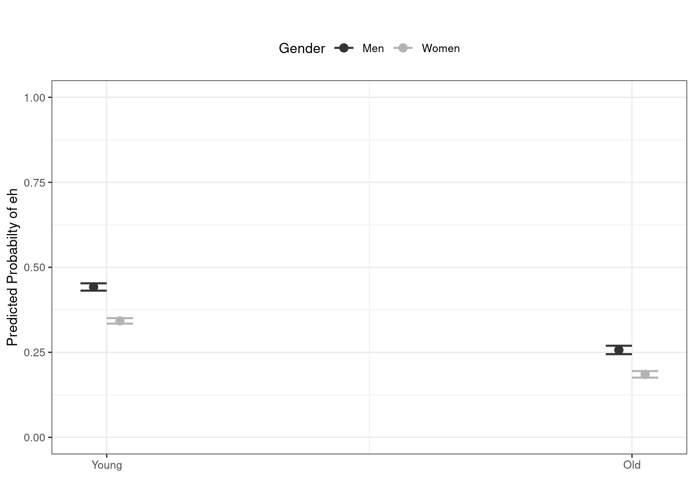

Fixed-Effects Regression Modelling in R
Introduction
This tutorial focuses on different types of fixed-effects regression analysis using R.1 Regression models can be divided into fixed- and mixed-effects regression models (depending on whether the model has a random effect structure or not) and this tutorial covers multiple fixed-effects linear, logistic, ordinal, and Poisson regression which differ in that they take different types of dependent or response variables. The versatility regarding being able to deal with many different response variables is one of the reasons why regression analysis is among the most widely used quantitative methods in the language sciences. Such regression models are used to assess if and how predictors (variables or interactions between variables) correlate with a certain response.
Check out this tutorial if you want to know more about the theoretical underpinnings and the conceptual basis of regression analysis.

This tutorial is aimed at intermediate and advanced users of R with the aim of showcasing how to perform regression analysis using R. The aim is not to provide a fully-fledged analysis but rather to show and exemplify common regression types, model diagnostics, and model fitting using R.
The entire R Notebook for the tutorial can be downloaded here. If you want to render the R Notebook on your machine, i.e. knitting the document to html or a pdf, you need to make sure that you have R and RStudio installed and you also need to download the bibliography file and store it in the same folder where you store the Rmd or the Rproj file.
Preparation and session set up
This tutorial is based on R. If you have not installed R or are new to it, you will find an introduction to and more information how to use R here. For this tutorials, we need to install certain packages from an R library so that the scripts shown below are executed without errors. Before turning to the code below, please install the packages by running the code below this paragraph. If you have already installed the packages mentioned below, then you can skip ahead and ignore this section. To install the necessary packages, simply run the following code - it may take some time (between 1 and 5 minutes to install all of the libraries so you do not need to worry if it takes some time).
# install
install.packages("car")
install.packages("flextable")
install.packages("ggplot2")
install.packages("ggpubr")
install.packages("Hmisc")
install.packages("MASS")
install.packages("mclogit")
install.packages("ordinal")
install.packages("rms")
install.packages("robustbase")
install.packages("sjPlot")
install.packages("stringr")
install.packages("tibble")
install.packages("dplyr")
install.packages("vcd")
install.packages("vip")
install.packages("see")
install.packages("glmulti")
install.packages("performance")
install.packages("report")
install.packages("ggfortify")
install.packages("caret")
install.packages("msm")
# install klippy for copy-to-clipboard button in code chunks
install.packages("remotes")
remotes::install_github("rlesur/klippy")Now that we have installed the packages, we activate them as shown below.
# set options
options(stringsAsFactors = F) # no automatic data transformation
options("scipen" = 100, "digits" = 12) # suppress math annotation
# load packages
library(car)
library(flextable)
library(ggfortify)
library(ggplot2)
library(ggpubr)
library(Hmisc)
library(MASS)
library(ordinal)
library(rms)
library(sjPlot)
library(stringr)
library(vcd)
library(vip)
library(glmulti)
library(performance)
library(report)
library(dplyr)
# activate klippy for copy-to-clipboard button
klippy::klippy()Once you have installed R and RStudio and initiated the session by executing the code shown above, you are good to go.
Multiple Linear Regression
In contrast to simple linear regression, which estimates the effect of a single predictor, multiple linear regression estimates the effect of various predictor (see the equation below). A multiple linear regression can thus test the effects of various predictors simultaneously.
\[\begin{equation} f_{(x)} = \alpha + \beta_{1}x_{i} + \beta_{2}x_{i+1} + \dots + \beta_{n}x_{i+n} + \epsilon \end{equation}\]
There exists a wealth of literature focusing on multiple linear regressions and the concepts it is based on. For instance, there are [1], [2], [3], [4], [5], [6], [7], [8] and [9] to name just a few. Introductions to regression modeling in R are [10], [11], [6], or [7].
The model diagnostics we are dealing with here are partly identical to the diagnostic methods discussed in the section on simple linear regression. Because of this overlap, diagnostics will only be described in more detail if they have not been described in the section on simple linear regression.
EXCURSION
`
A note on sample size and power
Although there appears to be a general assumption that 25 data points per variable level are sufficient, this is merely a general rule of thumb that is actually often incorrect. Such rules of thumb are inadequate because the required sample size depends on the number of variables in a given model, the size of the effect, the variance of the effect, and the desired power - in other words, the minimum necessary sample size relates to statistical power (see here for a tutorial on power). If a model contains many variables, then this requires a larger sample size than a model which only uses very few predictors and if the effect that we want to find is small, then this also requires a larger sample than if the effect we are interested in is large. Finally, effects that are very robust and do not exhibit substantive variability require a much smaller sample size compared with effects that are spurious and vary notably Since the sample size depends on the effect size and variance as well as the number of variables, there is no one-size-fits-all answer to what the best sample size is.
Another, slightly better but still incorrect, rule of thumb is that the more data, the better. This is not correct because models based on many cases are prone to report almost any effect as significant (although with a tiny effect size). A discussion about this phenomenon led to a discussion between Adam Kilgariff and Stefan Gries (see here for Adam’s initial discussion note and see here for Stefan’s response) resulting in a wider acknowledgement that effect sizes are more important than mere p-values. Also, given that there are procedures that can correct for overfitting, larger data sets are still preferable to data sets that are simply too small to warrant reliable results. In conclusion, it remains true that the sample size depends on the effect under investigation.`
Despite there being no ultimate rule of thumb, [5], based on [12], provide data-driven suggestions for the minimal size of data required for regression models that aim to find medium sized effects (k = number of predictors; categorical variables with more than two levels should be transformed into dummy variables):
If one is merely interested in the overall model fit (something I have not encountered), then the sample size should be at least 50 + k (k = number of predictors in model).
If one is only interested in the effect of specific variables, then the sample size should be at least 104 + k (k = number of predictors in model).
If one is only interested in both model fit and the effect of specific variables, then the sample size should be at least the higher value of 50 + k or 104 + k (k = number of predictors in model).
You will see in the R code below that there is already a function that tests whether the sample size is sufficient.
Example: Gifts and Availability
The example we will go through here is taken from [5]. In this example, the research question is if the money that men spend on presents for women depends on the women’s attractiveness and their relationship status. To answer this research question, we will implement a multiple linear regression and start by loading the data and inspect its structure and properties.
# load data
mlrdata <- base::readRDS(url("https://slcladal.github.io/data/mld.rda", "rb"))status | attraction | money |
Relationship | NotInterested | 86.33 |
Relationship | NotInterested | 45.58 |
Relationship | NotInterested | 68.43 |
Relationship | NotInterested | 52.93 |
Relationship | NotInterested | 61.86 |
Relationship | NotInterested | 48.47 |
Relationship | NotInterested | 32.79 |
Relationship | NotInterested | 35.91 |
Relationship | NotInterested | 30.98 |
Relationship | NotInterested | 44.82 |
Relationship | NotInterested | 35.05 |
Relationship | NotInterested | 64.49 |
Relationship | NotInterested | 54.50 |
Relationship | NotInterested | 61.48 |
Relationship | NotInterested | 55.51 |
The data set consist of three variables stored in three columns. The first column contains the relationship status of the present giver (in this study this were men), the second whether the man is interested in the woman (the present receiver in this study), and the third column represents the money spend on the present. The data set represents 100 cases and the mean amount of money spend on a present is 88.38 dollars. In a next step, we visualize the data to get a more detailed impression of the relationships between variables.
# create plots
p1 <- ggplot(mlrdata, aes(status, money)) +
geom_boxplot() +
theme_bw()
# plot 2
p2 <- ggplot(mlrdata, aes(attraction, money)) +
geom_boxplot() +
theme_bw()
# plot 3
p3 <- ggplot(mlrdata, aes(x = money)) +
geom_histogram(aes(y=..density..)) +
theme_bw() +
geom_density(alpha=.2, fill = "gray50")
# plot 4
p4 <- ggplot(mlrdata, aes(status, money)) +
geom_boxplot(aes(fill = factor(status))) +
scale_fill_manual(values = c("grey30", "grey70")) +
facet_wrap(~ attraction) +
guides(fill = "none") +
theme_bw()
# show plots
vip::grid.arrange(grobs = list(p1, p2, p3, p4), widths = c(1, 1), layout_matrix = rbind(c(1, 2), c(3, 4)))
The upper left figure consists of a boxplot which shows how much money was spent by relationship status. The figure suggests that men spend more on women if they are not in a relationship. The next figure shows the relationship between the money spend on presents and whether or not the men were interested in the women.
The boxplot in the upper right panel suggests that men spend substantially more on women if the men are interested in them. The next figure depicts the distribution of the amounts of money spend on the presents for the women. In addition, the figure indicates the existence of two outliers (dots in the boxplot)
The histogram in the lower left panel shows that, although the mean amount of money spent on presents is 88.38 dollars, the distribution peaks around 50 dollars indicating that on average, men spend about 50 dollars on presents. Finally, we will plot the amount of money spend on presents against relationship status by attraction in order to check whether the money spent on presents is affected by an interaction between attraction and relationship status.
The boxplot in the lower right panel confirms the existence of an interaction (a non-additive term) as men only spend more money on women if the men single and they are interested in the women. If men are not interested in the women, then the relationship has no effect as they spend an equal amount of money on the women regardless of whether they are in a relationship or not.
We will now start to implement the regression model. In a first step, we create two saturated models that contain all possible predictors (main effects and interactions). The two models are identical but one is generated with the lm and the other with the glm function as these functions offer different model parameters in their output.
m1.mlr = lm( # generate lm regression object
money ~ 1 + attraction*status, # def. regression formula (1 = intercept)
data = mlrdata) # def. data
m1.glm = glm( # generate glm regression object
money ~ 1 + attraction*status, # def. regression formula (1 = intercept)
family = gaussian, # def. linkage function
data = mlrdata) # def. dataAfter generating the saturated models we can now start with the model fitting. Model fitting refers to a process that aims at find the model that explains a maximum of variance with a minimum of predictors [see 5]. Model fitting is therefore based on the principle of parsimony which is related to Occam’s razor according to which explanations that require fewer assumptions are more likely to be true.
Automatic Model Fitting
In this section, we will use a backward elimination procedure that uses decreases in AIC (Akaike Information Criterion) as the criterion to minimize the model in a step-wise manner. This procedure aims at finding the model with the lowest AIC values by evaluating - step-by-step - whether the removal of a predictor (term) leads to a lower AIC value.
We use this method here to show how to implement it but a better option would be to use the glmulti function from the glmulti package [see 13] to find the best model. The glmulti function is better as it checks all possible models and the reports the model(s) with the best fit. This is advantages over forward or backward elimination as these procedures will often lead to different suggestions for the best model (based on the order in which predictors are added or removed). The tutorial on mixed-effects regression modelling shows how to implement
The reason for avoiding automated model fitting is that the algorithm only checks if the AIC has decreased but not if the model is stable or reliable. Thus, automated model fitting has the problem that you can never be sure that the way that lead you to the final model is reliable and that all models were indeed stable. Imagine you want to climb down from a roof top and you have a ladder. The problem is that you do not know if and how many steps are broken. This is similar to using automated model fitting. In other sections, we will explore better methods to fit models (manual step-wise step-up and step-down procedures, for example).
The AIC is calculated using the equation below. The lower the AIC value, the better the balance between explained variance and the number of predictors. AIC values can and should only be compared for models that are fit on the same data set with the same (number of) cases (LL stands for logged likelihood or LogLikelihood and k represents the number of predictors in the model (including the intercept); the LL represents a measure of how good the model fits the data).
\[\begin{equation} Akaike Information Criterion (AIC) = -2LL + 2k \end{equation}\]
An alternative to the AIC is the BIC (Bayesian Information Criterion). Both AIC and BIC penalize models for including variables in a model. The penalty of the BIC is bigger than the penalty of the AIC and it includes the number of cases in the model (LL stands for logged likelihood or LogLikelihood, k represents the number of predictors in the model (including the intercept), and N represents the number of cases in the model).
\[\begin{equation} Bayesian Information Criterion (BIC) = -2LL + 2k * log(N) \end{equation}\]
Interactions are evaluated first and only if all insignificant interactions have been removed would the procedure start removing insignificant main effects (that are not part of significant interactions). Other model fitting procedures (forced entry, step-wise step up, hierarchical) are discussed during the implementation of other regression models. We cannot discuss all procedures here as model fitting is rather complex and a discussion of even the most common procedures would to lengthy and time consuming at this point. It is important to note though that there is not perfect model fitting procedure and automated approaches should be handled with care as they are likely to ignore violations of model parameters that can be detected during manual - but time consuming - model fitting procedures. As a general rule of thumb, it is advisable to fit models as carefully and deliberately as possible. We will now begin to fit the model.
# automated AIC based model fitting
step(m1.mlr, direction = "both")Start: AIC=592.52
money ~ 1 + attraction * status
Df Sum of Sq RSS AIC
<none> 34557.56428 592.5211556
- attraction:status 1 24947.25481 59504.81909 644.8642395
Call:
lm(formula = money ~ 1 + attraction * status, data = mlrdata)
Coefficients:
(Intercept) attractionNotInterested
99.1548 -47.6628
statusSingle attractionNotInterested:statusSingle
57.6928 -63.1788 The automated model fitting procedure informs us that removing predictors has not caused a decrease in the AIC. The saturated model is thus also the final minimal adequate model. We will now inspect the final minimal model and go over the model report.
m2.mlr = lm( # generate lm regression object
money ~ (status + attraction)^2, # def. regression formula
data = mlrdata) # def. data
m2.glm = glm( # generate glm regression object
money ~ (status + attraction)^2, # def. regression formula
family = gaussian, # def. linkage function
data = mlrdata) # def. data
# inspect final minimal model
summary(m2.mlr)
Call:
lm(formula = money ~ (status + attraction)^2, data = mlrdata)
Residuals:
Min 1Q Median 3Q Max
-45.0760 -14.2580 0.4596 11.9315 44.1424
Coefficients:
Estimate Std. Error t value
(Intercept) 99.15480000 3.79459947 26.13050
statusSingle 57.69280000 5.36637403 10.75080
attractionNotInterested -47.66280000 5.36637403 -8.88175
statusSingle:attractionNotInterested -63.17880000 7.58919893 -8.32483
Pr(>|t|)
(Intercept) < 0.000000000000000222 ***
statusSingle < 0.000000000000000222 ***
attractionNotInterested 0.00000000000003751 ***
statusSingle:attractionNotInterested 0.00000000000058085 ***
---
Signif. codes: 0 '***' 0.001 '**' 0.01 '*' 0.05 '.' 0.1 ' ' 1
Residual standard error: 18.9729973 on 96 degrees of freedom
Multiple R-squared: 0.852041334, Adjusted R-squared: 0.847417626
F-statistic: 184.276619 on 3 and 96 DF, p-value: < 0.0000000000000002220446The first element of the report is called Call and it reports the regression formula of the model. Then, the report provides the residual distribution (the range, median and quartiles of the residuals) which allows drawing inferences about the distribution of differences between observed and expected values. If the residuals are distributed non-normally, then this is a strong indicator that the model is unstable and unreliable because mathematical assumptions on which the model is based are violated.
Next, the model summary reports the most important part: a table with model statistics of the fixed-effects structure of the model. The table contains the estimates (coefficients of the predictors), standard errors, t-values, and the p-values which show whether a predictor significantly correlates with the dependent variable that the model investigates.
All main effects (status and attraction) as well as the interaction between status and attraction is reported as being significantly correlated with the dependent variable (money). An interaction occurs if a correlation between the dependent variable and a predictor is affected by another predictor.
The top most term is called intercept and has a value of 99.15 which represents the base estimate to which all other estimates refer. To exemplify what this means, let us consider what the model would predict that a man would spend on a present if he interested in the woman but he is also in a relationship. The amount he would spend (based on the model would be 99.15 dollars (which is the intercept). This means that the intercept represents the predicted value if all predictors take the base or reference level. And since being in relationship but being interested are the case, and because the interaction does not apply, the predicted value in our example is exactly the intercept (see below).
#intercept Single NotInterested Single:NotInterested
99.15 + 57.69 + 0 + 0 # 156.8 single + interested[1] 156.8499.15 + 57.69 - 47.66 - 63.18 # 46.00 single + not interested[1] 4699.15 - 0 + 0 - 0 # 99.15 relationship + interested[1] 99.1599.15 - 0 - 47.66 - 0 # 51.49 relationship + not interested[1] 51.49Now, let us consider what a man would spend if he is in a relationship and he is not attracted to the women. In that case, the model predicts that the man would spend only 51.49 dollars on a present: the intercept (99.15) minus 47.66 because the man is not interested (and no additional subtraction because the interaction does not apply).
We can derive the same results easier using the predict function.
# make prediction based on the model for original data
prediction <- predict(m2.mlr, newdata = mlrdata)
# inspect predictions
table(round(prediction,2))
46.01 51.49 99.15 156.85
25 25 25 25 Below the table of coefficients, the regression summary reports model statistics that provide information about how well the model performs. The difference between the values and the values in the coefficients table is that the model statistics refer to the model as a whole rather than focusing on individual predictors.
The multiple R2-value is a measure of how much variance the model explains. A multiple R2-value of 0 would inform us that the model does not explain any variance while a value of .852 mean that the model explains 85.2 percent of the variance. A value of 1 would inform us that the model explains 100 percent of the variance and that the predictions of the model match the observed values perfectly. Multiplying the multiple R2-value thus provides the percentage of explained variance. Models that have a multiple R2-value equal or higher than .05 are deemed substantially significant [see 14]. It has been claimed that models should explain a minimum of 5 percent of variance but this is problematic as it is not uncommon for models to have very low explanatory power while still performing significantly and systematically better than chance. In addition, the total amount of variance is negligible in cases where one is interested in very weak but significant effects. It is much more important for model to perform significantly better than minimal base-line models because if this is not the case, then the model does not have any predictive and therefore no explanatory power.
The adjusted R2-value considers the amount of explained variance in light of the number of predictors in the model (it is thus somewhat similar to the AIC and BIC) and informs about how well the model would perform if it were applied to the population that the sample is drawn from. Ideally, the difference between multiple and adjusted R2-value should be very small as this means that the model is not overfitted. If, however, the difference between multiple and adjusted R2-value is substantial, then this would strongly suggest that the model is unstable and overfitted to the data while being inadequate for drawing inferences about the population. Differences between multiple and adjusted R2-values indicate that the data contains outliers that cause the distribution of the data on which the model is based to differ from the distributions that the model mathematically requires to provide reliable estimates. The difference between multiple and adjusted R2-value in our model is very small (85.2-84.7=.05) and should not cause concern.
Before continuing, we will calculate the confidence intervals of the coefficients.
# extract confidence intervals of the coefficients
confint(m2.mlr) 2.5 % 97.5 %
(Intercept) 91.6225795890 106.6870204110
statusSingle 47.0406317400 68.3449682600
attractionNotInterested -58.3149682600 -37.0106317400
statusSingle:attractionNotInterested -78.2432408219 -48.1143591781# create and compare baseline- and minimal adequate model
m0.mlr <- lm(money ~1, data = mlrdata)
anova(m0.mlr, m2.mlr)Analysis of Variance Table
Model 1: money ~ 1
Model 2: money ~ (status + attraction)^2
Res.Df RSS Df Sum of Sq F Pr(>F)
1 99 233562.28650
2 96 34557.56428 3 199004.7222 184.27662 < 0.000000000000000222 ***
---
Signif. codes: 0 '***' 0.001 '**' 0.01 '*' 0.05 '.' 0.1 ' ' 1Now, we compare the final minimal adequate model to the base-line model to test whether then final model significantly outperforms the baseline model.
# compare baseline- and minimal adequate model
Anova(m0.mlr, m2.mlr, type = "III")Anova Table (Type III tests)
Response: money
Sum Sq Df F value Pr(>F)
(Intercept) 781015.8300 1 2169.64133 < 0.000000000000000222 ***
Residuals 34557.5643 96
---
Signif. codes: 0 '***' 0.001 '**' 0.01 '*' 0.05 '.' 0.1 ' ' 1The comparison between the two model confirms that the minimal adequate model performs significantly better (makes significantly more accurate estimates of the outcome variable) compared with the baseline model.
Outlier Detection
After implementing the multiple regression, we now need to look for outliers and perform the model diagnostics by testing whether removing data points disproportionately decreases model fit. To begin with, we generate diagnostic plots.
# generate plots
autoplot(m2.mlr) +
theme(panel.grid.major = element_blank(), panel.grid.minor = element_blank()) +
theme_bw()
The plots do not show severe problems such as funnel shaped patterns or drastic deviations from the diagonal line in Normal Q-Q plot (have a look at the explanation of what to look for and how to interpret these diagnostic plots in the section on simple linear regression) but data points 52, 64, and 83 are repeatedly indicated as potential outliers.
# determine a cutoff for data points that have D-values higher than 4/(n-k-1)
cutoff <- 4/((nrow(mlrdata)-length(m2.mlr$coefficients)-2))
# start plotting
par(mfrow = c(1, 2)) # display plots in 3 rows/2 columns
qqPlot(m2.mlr, main="QQ Plot") # create qq-plot[1] 52 83plot(m2.mlr, which=4, cook.levels = cutoff); par(mfrow = c(1, 1))
The graphs indicate that data points 52, 64, and 83 may be problematic. We will therefore statistically evaluate whether these data points need to be removed. In order to find out which data points require removal, we extract the influence measure statistics and add them to out data set.
# extract influence statistics
infl <- influence.measures(m2.mlr)
# add infl. statistics to data
mlrdata <- data.frame(mlrdata, infl[[1]], infl[[2]])
# annotate too influential data points
remove <- apply(infl$is.inf, 1, function(x) {
ifelse(x == TRUE, return("remove"), return("keep")) } )
# add annotation to data
mlrdata <- data.frame(mlrdata, remove)
# number of rows before removing outliers
nrow(mlrdata)[1] 100# remove outliers
mlrdata <- mlrdata[mlrdata$remove == "keep", ]
# number of rows after removing outliers
nrow(mlrdata)[1] 98The difference in row in the data set before and after removing data points indicate that two data points which represented outliers have been removed.
NOTE
In general, outliers should not simply be removed unless there are good reasons for it (this could be that the outliers represent measurement errors). If a data set contains outliers, one should rather switch to methods that are better at handling outliers, e.g. by using weights to account for data points with high leverage. One alternative would be to switch to a robust regression (see here). However, here we show how to proceed by removing outliers as this is a common, though potentially problematic, method of dealing with outliers.
Rerun Regression
As we have decided to remove the outliers which means that we are now dealing with a different data set, we need to rerun the regression analysis. As the steps are identical to the regression analysis performed above, the steps will not be described in greater detail.
# recreate regression models on new data
m0.mlr = lm(money ~ 1, data = mlrdata)
m0.glm = glm(money ~ 1, family = gaussian, data = mlrdata)
m1.mlr = lm(money ~ (status + attraction)^2, data = mlrdata)
m1.glm = glm(money ~ status * attraction, family = gaussian,
data = mlrdata)
# automated AIC based model fitting
step(m1.mlr, direction = "both")Start: AIC=570.29
money ~ (status + attraction)^2
Df Sum of Sq RSS AIC
<none> 30411.31714 570.2850562
- status:attraction 1 21646.86199 52058.17914 620.9646729
Call:
lm(formula = money ~ (status + attraction)^2, data = mlrdata)
Coefficients:
(Intercept) statusSingle
99.1548000 55.8535333
attractionNotInterested statusSingle:attractionNotInterested
-47.6628000 -59.4613667 # create new final models
m2.mlr = lm(money ~ (status + attraction)^2, data = mlrdata)
m2.glm = glm(money ~ status * attraction, family = gaussian,
data = mlrdata)
# inspect final minimal model
summary(m2.mlr)
Call:
lm(formula = money ~ (status + attraction)^2, data = mlrdata)
Residuals:
Min 1Q Median 3Q Max
-35.76416667 -13.50520000 -0.98948333 10.59887500 38.77166667
Coefficients:
Estimate Std. Error t value
(Intercept) 99.15480000 3.59735820 27.56323
statusSingle 55.85353333 5.14015367 10.86612
attractionNotInterested -47.66280000 5.08743275 -9.36873
statusSingle:attractionNotInterested -59.46136667 7.26927504 -8.17982
Pr(>|t|)
(Intercept) < 0.000000000000000222 ***
statusSingle < 0.000000000000000222 ***
attractionNotInterested 0.0000000000000040429 ***
statusSingle:attractionNotInterested 0.0000000000013375166 ***
---
Signif. codes: 0 '***' 0.001 '**' 0.01 '*' 0.05 '.' 0.1 ' ' 1
Residual standard error: 17.986791 on 94 degrees of freedom
Multiple R-squared: 0.857375902, Adjusted R-squared: 0.852824069
F-statistic: 188.358387 on 3 and 94 DF, p-value: < 0.0000000000000002220446# extract confidence intervals of the coefficients
confint(m2.mlr) 2.5 % 97.5 %
(Intercept) 92.0121609656 106.2974390344
statusSingle 45.6476377202 66.0594289465
attractionNotInterested -57.7640169936 -37.5615830064
statusSingle:attractionNotInterested -73.8946826590 -45.0280506744# compare baseline with final model
anova(m0.mlr, m2.mlr)Analysis of Variance Table
Model 1: money ~ 1
Model 2: money ~ (status + attraction)^2
Res.Df RSS Df Sum of Sq F Pr(>F)
1 97 213227.06081
2 94 30411.31714 3 182815.7437 188.35839 < 0.000000000000000222 ***
---
Signif. codes: 0 '***' 0.001 '**' 0.01 '*' 0.05 '.' 0.1 ' ' 1# compare baseline with final model
Anova(m0.mlr, m2.mlr, type = "III")Anova Table (Type III tests)
Response: money
Sum Sq Df F value Pr(>F)
(Intercept) 760953.2107 1 2352.07181 < 0.000000000000000222 ***
Residuals 30411.3171 94
---
Signif. codes: 0 '***' 0.001 '**' 0.01 '*' 0.05 '.' 0.1 ' ' 1Additional Model Diagnostics
After rerunning the regression analysis on the updated data set, we again create diagnostic plots in order to check whether there are potentially problematic data points.
# generate plots
autoplot(m2.mlr) +
theme(panel.grid.major = element_blank(), panel.grid.minor = element_blank()) +
theme_bw()
# determine a cutoff for data points that have
# D-values higher than 4/(n-k-1)
cutoff <- 4/((nrow(mlrdata)-length(m2.mlr$coefficients)-2))
# start plotting
par(mfrow = c(1, 2)) # display plots in 1 row/2 columns
qqPlot(m2.mlr, main="QQ Plot") # create qq-plot84 88
82 86 plot(m2.mlr, which=4, cook.levels = cutoff); par(mfrow = c(1, 1))Although the diagnostic plots indicate that additional points may be problematic, but these data points deviate substantially less from the trend than was the case with the data points that have already been removed. To make sure that retaining the data points that are deemed potentially problematic by the diagnostic plots, is acceptable, we extract diagnostic statistics and add them to the data.
# add model diagnostics to the data
mlrdata <- mlrdata %>%
dplyr::mutate(residuals = resid(m2.mlr),
standardized.residuals = rstandard(m2.mlr),
studentized.residuals = rstudent(m2.mlr),
cooks.distance = cooks.distance(m2.mlr),
dffit = dffits(m2.mlr),
leverage = hatvalues(m2.mlr),
covariance.ratios = covratio(m2.mlr),
fitted = m2.mlr$fitted.values)We can now use these diagnostic statistics to create more precise diagnostic plots.
# plot 5
p5 <- ggplot(mlrdata,
aes(studentized.residuals)) +
theme(legend.position = "none")+
geom_histogram(aes(y=..density..),
binwidth = .2,
colour="black",
fill="gray90") +
labs(x = "Studentized Residual", y = "Density") +
stat_function(fun = dnorm,
args = list(mean = mean(mlrdata$studentized.residuals, na.rm = TRUE),
sd = sd(mlrdata$studentized.residuals, na.rm = TRUE)),
colour = "red", size = 1) +
theme_bw(base_size = 8)
# plot 6
p6 <- ggplot(mlrdata, aes(fitted, studentized.residuals)) +
geom_point() +
geom_smooth(method = "lm", colour = "Red")+
theme_bw(base_size = 8)+
labs(x = "Fitted Values",
y = "Studentized Residual")
# plot 7
p7 <- qplot(sample = mlrdata$studentized.residuals, stat="qq") +
theme_bw(base_size = 8) +
labs(x = "Theoretical Values",
y = "Observed Values")
vip::grid.arrange(p5, p6, p7, nrow = 1)
The new diagnostic plots do not indicate outliers that require removal. With respect to such data points the following parameters should be considered:
Data points with standardized residuals > 3.29 should be removed [5]
If more than 1 percent of data points have standardized residuals exceeding values > 2.58, then the error rate of the model is unacceptable [5].
If more than 5 percent of data points have standardized residuals exceeding values > 1.96, then the error rate of the model is unacceptable [5]
In addition, data points with Cook’s D-values > 1 should be removed [5]
Also, data points with leverage values higher than \(3(k + 1)/N\) or \(2(k + 1)/N\) (k = Number of predictors, N = Number of cases in model) should be removed [5]
There should not be (any) autocorrelation among predictors. This means that independent variables cannot be correlated with itself (for instance, because data points come from the same subject). If there is autocorrelation among predictors, then a Repeated Measures Design or a (hierarchical) mixed-effects model should be implemented instead.
Predictors cannot substantially correlate with each other (multicollinearity) (see the subsection on (multi-)collinearity in the section of multiple binomial logistic regression for more details about (multi-)collinearity). If a model contains predictors that have variance inflation factors (VIF) > 10 the model is unreliable [15] and predictors causing such VIFs should be removed. Indeed, even VIFs of 2.5 can be problematic [14] Indeed, [16] propose that variables with VIFs exceeding 3 should be removed!
NOTE
However, (multi-)collinearity is only an issue if one is interested in interpreting regression results! If the interpretation is irrelevant because what is relevant is prediction(!), then it does not matter if the model contains collinear predictors! See [6] for a more elaborate explanation.
- The mean value of VIFs should be ~ 1 [17].
The following code chunk evaluates these criteria.
# 1: optimal = 0
# (listed data points should be removed)
which(mlrdata$standardized.residuals > 3.29)named integer(0)# 2: optimal = 1
# (listed data points should be removed)
stdres_258 <- as.vector(sapply(mlrdata$standardized.residuals, function(x) {
ifelse(sqrt((x^2)) > 2.58, 1, 0) } ))
(sum(stdres_258) / length(stdres_258)) * 100[1] 0# 3: optimal = 5
# (listed data points should be removed)
stdres_196 <- as.vector(sapply(mlrdata$standardized.residuals, function(x) {
ifelse(sqrt((x^2)) > 1.96, 1, 0) } ))
(sum(stdres_196) / length(stdres_196)) * 100[1] 6.12244897959# 4: optimal = 0
# (listed data points should be removed)
which(mlrdata$cooks.distance > 1)named integer(0)# 5: optimal = 0
# (data points should be removed if cooks distance is close to 1)
which(mlrdata$leverage >= (3*mean(mlrdata$leverage)))named integer(0)# 6: checking autocorrelation:
# Durbin-Watson test (optimal: high p-value)
dwt(m2.mlr) lag Autocorrelation D-W Statistic p-value
1 -0.0143324675649 1.9680423527 0.622
Alternative hypothesis: rho != 0# 7: test multicollinearity 1
vif(m2.mlr) statusSingle attractionNotInterested
2.00 1.96
statusSingle:attractionNotInterested
2.96 # 8: test multicollinearity 2
1/vif(m2.mlr) statusSingle attractionNotInterested
0.500000000000 0.510204081633
statusSingle:attractionNotInterested
0.337837837838 # 9: mean vif should not exceed 1
mean(vif(m2.mlr))[1] 2.30666666667Except for the mean VIF value (2.307) which should not exceed 1, all diagnostics are acceptable. We will now test whether the sample size is sufficient for our model. With respect to the minimal sample size and based on [12], [5] offer the following rules of thumb for an adequate sample size (k = number of predictors; categorical predictors with more than two levels should be recoded as dummy variables):
if you are interested in the overall model: 50 + 8k (k = number of predictors)
if you are interested in individual predictors: 104 + k
if you are interested in both: take the higher value!
Evaluation of Sample Size
After performing the diagnostics, we will now test whether the sample size is adequate and what the values of R would be based on a random distribution in order to be able to estimate how likely a \(\beta\)-error is given the present sample size [see 5]. Beta errors (or \(\beta\)-errors) refer to the erroneous assumption that a predictor is not significant (based on the analysis and given the sample) although it does have an effect in the population. In other words, \(\beta\)-error means to overlook a significant effect because of weaknesses of the analysis. The test statistics ranges between 0 and 1 where lower values are better. If the values approximate 1, then there is serious concern as the model is not reliable given the sample size. In such cases, unfortunately, the best option is to increase the sample size.
# load functions
source("https://slcladal.github.io/rscripts/SampleSizeMLR.r")
source("https://slcladal.github.io/rscripts/ExpR.r")
# check if sample size is sufficient
smplesz(m2.mlr)[1] "Sample too small: please increase your sample by 9 data points"# check beta-error likelihood
expR(m2.mlr)[1] "Based on the sample size expect a false positive correlation of 0.0309 between the predictors and the predicted"The function smplesz reports that the sample size is insufficient by 9 data points according to [12]. The likelihood of \(\beta\)-errors, however, is very small (0.0309). As a last step, we summarize the results of the regression analysis.
# tabulate model results
sjPlot::tab_model(m0.glm, m2.glm)| money | money | |||||
|---|---|---|---|---|---|---|
| Predictors | Estimates | CI | p | Estimates | CI | p |
| (Intercept) | 88.12 | 78.72 – 97.52 | <0.001 | 99.15 | 92.10 – 106.21 | <0.001 |
| status [Single] | 55.85 | 45.78 – 65.93 | <0.001 | |||
| attraction [NotInterested] |
-47.66 | -57.63 – -37.69 | <0.001 | |||
| status [Single] * attraction [NotInterested] |
-59.46 | -73.71 – -45.21 | <0.001 | |||
| Observations | 98 | 98 | ||||
| R2 | 0.000 | 0.857 | ||||
Additionally, we can inspect the summary of the regression model as shown below to extract additional information.
summary(m2.mlr)
Call:
lm(formula = money ~ (status + attraction)^2, data = mlrdata)
Residuals:
Min 1Q Median 3Q Max
-35.76416667 -13.50520000 -0.98948333 10.59887500 38.77166667
Coefficients:
Estimate Std. Error t value
(Intercept) 99.15480000 3.59735820 27.56323
statusSingle 55.85353333 5.14015367 10.86612
attractionNotInterested -47.66280000 5.08743275 -9.36873
statusSingle:attractionNotInterested -59.46136667 7.26927504 -8.17982
Pr(>|t|)
(Intercept) < 0.000000000000000222 ***
statusSingle < 0.000000000000000222 ***
attractionNotInterested 0.0000000000000040429 ***
statusSingle:attractionNotInterested 0.0000000000013375166 ***
---
Signif. codes: 0 '***' 0.001 '**' 0.01 '*' 0.05 '.' 0.1 ' ' 1
Residual standard error: 17.986791 on 94 degrees of freedom
Multiple R-squared: 0.857375902, Adjusted R-squared: 0.852824069
F-statistic: 188.358387 on 3 and 94 DF, p-value: < 0.0000000000000002220446Although [5] suggest that the main effects of the predictors involved in the interaction should not be interpreted, they are interpreted here to illustrate how the results of a multiple linear regression can be reported.
We can use the reports package [18] to summarize the analysis.
report::report(m2.mlr)We fitted a linear model (estimated using OLS) to predict money with status and attraction (formula: money ~ (status + attraction)^2). The model explains a statistically significant and substantial proportion of variance (R2 = 0.86, F(3, 94) = 188.36, p < .001, adj. R2 = 0.85). The model's intercept, corresponding to status = Relationship and attraction = Interested, is at 99.15 (95% CI [92.01, 106.30], t(94) = 27.56, p < .001). Within this model:
- The effect of status [Single] is statistically significant and positive (beta = 55.85, 95% CI [45.65, 66.06], t(94) = 10.87, p < .001; Std. beta = 1.19, 95% CI [0.97, 1.41])
- The effect of attraction [NotInterested] is statistically significant and negative (beta = -47.66, 95% CI [-57.76, -37.56], t(94) = -9.37, p < .001; Std. beta = -1.02, 95% CI [-1.23, -0.80])
- The interaction effect of attraction [NotInterested] on status [Single] is statistically significant and negative (beta = -59.46, 95% CI [-73.89, -45.03], t(94) = -8.18, p < .001; Std. beta = -1.27, 95% CI [-1.58, -0.96])
Standardized parameters were obtained by fitting the model on a standardized version of the dataset. 95% Confidence Intervals (CIs) and p-values were computed using the Wald approximation.We can use this output to write up a final report:
A multiple linear regression was fitted to the data using an automated, step-wise, AIC-based (Akaike’s Information Criterion) procedure. The model fitting arrived at a final minimal model. During the model diagnostics, two outliers were detected and removed. Further diagnostics did not find other issues after the removal.
The final minimal adequate regression model is based on 98 data points and performs highly significantly better than a minimal baseline model (multiple R2: .857, adjusted R2: .853, F-statistic (3, 94): 154.4, AIC: 850.4, BIC: 863.32, p<.001\(***\)). The final minimal adequate regression model reports attraction and status as significant main effects. The relationship status of men correlates highly significantly and positively with the amount of money spend on the women’s presents (SE: 5.14, t-value: 10.87, p<.001\(***\)). This shows that men spend 156.8 dollars on presents if they are single while they spend 99,15 dollars if they are in a relationship. Whether men are attracted to women also correlates highly significantly and positively with the money they spend on women (SE: 5.09, t-values: -9.37, p<.001\(***\)). If men are not interested in women, they spend 47.66 dollar less on a present for women compared with women the men are interested in.
Furthermore, the final minimal adequate regression model reports a highly significant interaction between relationship status and attraction (SE: 7.27, t-value: -8.18, p<.001\(***\)): If men are single but they are not interested in a women, a man would spend only 59.46 dollars on a present compared to all other constellations.
Robust Regression
Robust regression represents an alternative to linear regression models when the data contains outliers that should not be removed. As such, robust regressions can handle overly influential data points (outliers) and they allow us to retain outliers rather than removing them by adding weights [19]. Thus, robust regressions are used when there are outliers present in the data and we can thus not use traditional models but we do not have a good reason for removing the outliers.
Robust regressions allow us to handle overly influential data points (outliers) by using weights. Thus, robust regressions enable us to retain all data points.
We begin by loading a data set (the mlrdata set which have used for multiple linear regression).
# load data
robustdata <- base::readRDS(url("https://slcladal.github.io/data/mld.rda", "rb"))status | attraction | money |
Relationship | NotInterested | 86.33 |
Relationship | NotInterested | 45.58 |
Relationship | NotInterested | 68.43 |
Relationship | NotInterested | 52.93 |
Relationship | NotInterested | 61.86 |
Relationship | NotInterested | 48.47 |
Relationship | NotInterested | 32.79 |
Relationship | NotInterested | 35.91 |
Relationship | NotInterested | 30.98 |
Relationship | NotInterested | 44.82 |
Relationship | NotInterested | 35.05 |
Relationship | NotInterested | 64.49 |
Relationship | NotInterested | 54.50 |
Relationship | NotInterested | 61.48 |
Relationship | NotInterested | 55.51 |
We first fit an ordinary linear model (and although we know from the section on multiple regression that the interaction between status and attraction is significant, we will disregard this for now as this will help to explain the weighing procedure which is the focus of this section).
# create model
slm <- lm(money ~ status+attraction, data = robustdata)
# inspect model
summary(slm)
Call:
lm(formula = money ~ status + attraction, data = robustdata)
Residuals:
Min 1Q Median 3Q Max
-60.87070 -15.78645 -2.61010 13.88770 59.93710
Coefficients:
Estimate Std. Error t value
(Intercept) 114.94950000 4.28993616 26.79515
statusSingle 26.10340000 4.95359160 5.26959
attractionNotInterested -79.25220000 4.95359160 -15.99894
Pr(>|t|)
(Intercept) < 0.000000000000000222 ***
statusSingle 0.00000082576 ***
attractionNotInterested < 0.000000000000000222 ***
---
Signif. codes: 0 '***' 0.001 '**' 0.01 '*' 0.05 '.' 0.1 ' ' 1
Residual standard error: 24.767958 on 97 degrees of freedom
Multiple R-squared: 0.745229335, Adjusted R-squared: 0.739976331
F-statistic: 141.867286 on 2 and 97 DF, p-value: < 0.0000000000000002220446We now check whether the model is well fitted using diagnostic plots.
# generate plots
autoplot(slm) +
theme(panel.grid.major = element_blank(), panel.grid.minor = element_blank()) The diagnostic plots indicate that there are three outliers in the data (data points 52, 83 and possibly 64). Therefore, we need to evaluate if the outliers severely affect the fit of the model.
robustdata[c(52, 64, 83),] status attraction money
52 Single NotInterested 0.93
64 Single NotInterested 84.28
83 Single Interested 200.99We can now calculate Cook’s distance and standardized residuals check if the values of the potentially problematic points have unacceptably high values (-2 < ok < 2).
CooksDistance <- cooks.distance(slm)
StandardizedResiduals <- stdres(slm)
a <- cbind(robustdata, CooksDistance, StandardizedResiduals)
a[CooksDistance > 4/100, ] status attraction money CooksDistance StandardizedResiduals
1 Relationship NotInterested 86.33 0.0444158829857 2.07565427025
52 Single NotInterested 0.93 0.0641937458854 -2.49535435377
65 Single NotInterested 12.12 0.0427613629698 -2.03662765573
67 Single NotInterested 13.28 0.0407877963315 -1.98907421786
83 Single Interested 200.99 0.0622397126545 2.45708203516
84 Single Interested 193.69 0.0480020776213 2.15782333134
88 Single Interested 193.78 0.0481663678409 2.16151282221We will calculate the absolute value and reorder the table so that it is easier to check the values.
AbsoluteStandardizedResiduals <- abs(StandardizedResiduals)
a <- cbind(robustdata, CooksDistance, StandardizedResiduals, AbsoluteStandardizedResiduals)
asorted <- a[order(-AbsoluteStandardizedResiduals), ]
asorted[1:10, ] status attraction money CooksDistance StandardizedResiduals
52 Single NotInterested 0.93 0.0641937458854 -2.49535435377
83 Single Interested 200.99 0.0622397126545 2.45708203516
88 Single Interested 193.78 0.0481663678409 2.16151282221
84 Single Interested 193.69 0.0480020776213 2.15782333134
1 Relationship NotInterested 86.33 0.0444158829857 2.07565427025
65 Single NotInterested 12.12 0.0427613629698 -2.03662765573
67 Single NotInterested 13.28 0.0407877963315 -1.98907421786
78 Single Interested 188.76 0.0394313968241 1.95572122040
21 Relationship NotInterested 81.90 0.0369837409025 1.89404933081
24 Relationship NotInterested 81.56 0.0364414260634 1.88011125419
AbsoluteStandardizedResiduals
52 2.49535435377
83 2.45708203516
88 2.16151282221
84 2.15782333134
1 2.07565427025
65 2.03662765573
67 1.98907421786
78 1.95572122040
21 1.89404933081
24 1.88011125419As Cook’s distance and the standardized residuals do have unacceptable values, we re-calculate the linear model as a robust regression and inspect the results
# create robust regression model
rmodel <- robustbase::lmrob(money ~ status + attraction, data = robustdata)
# inspect model
summary(rmodel)
Call:
robustbase::lmrob(formula = money ~ status + attraction, data = robustdata)
\--> method = "MM"
Residuals:
Min 1Q Median 3Q Max
-61.14269797 -15.20405742 -1.48712073 14.43502548 62.42342866
Coefficients:
Estimate Std. Error t value
(Intercept) 113.18405742 3.89777743 29.03810
statusSingle 25.38251392 5.08841085 4.98830
attractionNotInterested -76.49387337 5.06626478 -15.09867
Pr(>|t|)
(Intercept) < 0.000000000000000222 ***
statusSingle 0.0000026725 ***
attractionNotInterested < 0.000000000000000222 ***
---
Signif. codes: 0 '***' 0.001 '**' 0.01 '*' 0.05 '.' 0.1 ' ' 1
Robust residual standard error: 22.349751
Multiple R-squared: 0.740716956, Adjusted R-squared: 0.735370914
Convergence in 11 IRWLS iterations
Robustness weights:
10 weights are ~= 1. The remaining 90 ones are summarized as
Min. 1st Qu. Median Mean 3rd Qu. Max.
0.415507115 0.856134372 0.947485761 0.889078637 0.986192098 0.998890516
Algorithmic parameters:
tuning.chi bb tuning.psi
1.5476399999999999046 0.5000000000000000000 4.6850610000000001421
refine.tol rel.tol scale.tol
0.0000001000000000000 0.0000001000000000000 0.0000000001000000000
solve.tol eps.outlier eps.x
0.0000001000000000000 0.0010000000000000000 0.0000000000018189894
warn.limit.reject warn.limit.meanrw
0.5000000000000000000 0.5000000000000000000
nResample max.it best.r.s k.fast.s k.max
500 50 2 1 200
maxit.scale trace.lev mts compute.rd fast.s.large.n
200 0 1000 0 2000
psi subsampling cov
"bisquare" "nonsingular" ".vcov.avar1"
compute.outlier.stats
"SM"
seed : int(0) The output shows that both status and attraction are significant but, as we have seen above, the effect that really matters is the interaction between status and attraction.
We will briefly check the weights to understand the process of weighing better. The idea of weighing is to downgrade data points that are too influential while not punishing data points that have a good fit and are thus less influential. This means that the problematic data points should have lower weights than other data points (the maximum is 1 - so points can only be made “lighter”).
hweights <- data.frame(status = robustdata$status, resid = rmodel$resid, weight = rmodel$rweights)
hweights2 <- hweights[order(rmodel$rweights), ]
hweights2[1:15, ] status resid weight
83 Single 62.4234286579 0.415507114929
52 Single -61.1426979713 0.434323488879
88 Single 55.2134286579 0.521220438134
84 Single 55.1234286579 0.522529018160
78 Single 50.1934286579 0.593234264142
65 Single -49.9526979713 0.596626236587
1 Relationship 49.6398159519 0.601024799801
67 Single -48.7926979713 0.612874510784
21 Relationship 45.2098159519 0.661914443015
24 Relationship 44.8698159519 0.666467525203
39 Relationship -43.8940574189 0.679427923638
79 Single 40.8234286579 0.719104302439
58 Single -40.5226979713 0.722893398846
89 Single 39.9734286579 0.729766935693
95 Single 39.8234286579 0.731633318260The values of the weights support our assumption that those data points that were deemed too influential are made lighter as they now only have weights of 0.415507114929 and 0.434323488879 respectively. This was, however, not the focus of this sections as this section merely served to introduce the concept of weights and how they can be used in the context of a robust linear regression.
Logistic Regression
Logistic regression is a multivariate analysis technique that builds on and is very similar in terms of its implementation to linear regression but logistic regressions take dependent variables that represent nominal rather than numeric scaling [20]. The difference requires that the linear regression must be modified in certain ways to avoid producing non-sensical outcomes. The most fundamental difference between logistic and linear regressions is that logistic regression work on the probabilities of an outcome (the likelihood), rather than the outcome itself. In addition, the likelihoods on which the logistic regression works must be logged (logarithmized) in order to avoid produce predictions that produce values greater than 1 (instance occurs) and 0 (instance does not occur). You can check this by logging the values from -10 to 10 using the plogis function as shown below.
round(plogis(-10:10), 5) [1] 0.00005 0.00012 0.00034 0.00091 0.00247 0.00669 0.01799 0.04743 0.11920
[10] 0.26894 0.50000 0.73106 0.88080 0.95257 0.98201 0.99331 0.99753 0.99909
[19] 0.99966 0.99988 0.99995If we visualize these logged values, we get an S-shaped curve which reflects the logistic function.

To understand what this mean, we will use a very simple example. In this example, we want to see whether the height of men affect their likelihood of being in a relationship. The data we use represents a data set consisting of two variables: height and relationship.
The left panel of the Figure above shows that a linear model would predict values for the relationship status, which represents a factor (0 = Single and 1 = In a Relationship), that are nonsensical because values above 1 or below 0 do not make sense. In contrast to a linear regression, which predicts actual values, such as the frequencies of prepositions in a certain text, a logistic regression predicts probabilities of events (for example, being in a relationship) rather than actual values. The center panel shows the predictions of a logistic regression and we see that a logistic regression also has an intercept and a (very steep) slope but that the regression line also predicts values that are above 1 and below 0. However, when we log the predicted values we these predicted values are transformed into probabilities with values between 0 and 1. And the logged regression line has a S-shape which reflects the logistic function. Furthermore, we can then find the optimal line (the line with the lowest residual deviance) by comparing the sum of residuals - just as we did for a simple linear model and that way, we find the regression line for a logistic regression.
Example: EH in Kiwi English
To exemplify how to implement a logistic regression in R [see 21, 22] for very good and thorough introductions to this topic], we will analyze the use of the discourse particle eh in New Zealand English and test which factors correlate with its occurrence. The data set represents speech units in a corpus that were coded for the speaker who uttered a given speech unit, the gender, ethnicity, and age of that speaker and whether or not the speech unit contained an eh. To begin with, we clean the current work space, set option, install and activate relevant packages, load customized functions, and load the example data set.
# load data
blrdata <- base::readRDS(url("https://slcladal.github.io/data/bld.rda", "rb"))ID | Gender | Age | Ethnicity | EH |
<S1A-001#M> | Men | Young | Pakeha | 0 |
<S1A-001#M> | Men | Young | Pakeha | 1 |
<S1A-001#M> | Men | Young | Pakeha | 0 |
<S1A-001#M> | Men | Young | Pakeha | 0 |
<S1A-001#M> | Men | Young | Pakeha | 1 |
<S1A-001#M> | Men | Young | Pakeha | 1 |
<S1A-001#M> | Men | Young | Pakeha | 0 |
<S1A-001#M> | Men | Young | Pakeha | 0 |
<S1A-001#M> | Men | Young | Pakeha | 0 |
<S1A-001#M> | Men | Young | Pakeha | 1 |
<S1A-001#M> | Men | Young | Pakeha | 0 |
<S1A-001#M> | Men | Young | Pakeha | 0 |
<S1A-001#M> | Men | Young | Pakeha | 1 |
<S1A-001#M> | Men | Young | Pakeha | 1 |
<S1A-001#M> | Men | Young | Pakeha | 0 |
The summary of the data show that the data set contains 25,821 observations of five variables. The variable ID contains strings that represent a combination file and speaker of a speech unit. The second variable represents the gender, the third the age, and the fourth the ethnicity of speakers. The fifth variable represents whether or not a speech unit contained the discourse particle eh.
Next, we factorize the variables in our data set. In other words, we specify that the strings represent variable levels and define new reference levels because as a default R will use the variable level which first occurs in alphabet ordering as the reference level for each variable, we redefine the variable levels for Age and Ethnicity.
blrdata <- blrdata %>%
# factorize variables
dplyr::mutate(Age = factor(Age),
Gender = factor(Gender),
Ethnicity = factor(Ethnicity),
ID = factor(ID),
EH = factor(EH)) %>%
# relevel Age (Reference = Young) and Ethnicity (Reference= Pakeha))
dplyr::mutate(Age = relevel(Age, "Young"),
Ethnicity = relevel(Ethnicity, "Pakeha"))After preparing the data, we will now plot the data to get an overview of potential relationships between variables.
blrdata %>%
dplyr::mutate(EH = ifelse(EH == "0", 0, 1)) %>%
ggplot(aes(Age, EH, color = Gender)) +
facet_wrap(~Ethnicity) +
stat_summary(fun = mean, geom = "point") +
stat_summary(fun.data = mean_cl_boot, geom = "errorbar", width = 0.2) +
theme_set(theme_bw(base_size = 10)) +
theme(legend.position = "top") +
labs(x = "", y = "Observed Probabilty of eh") +
scale_color_manual(values = c("gray20", "gray70"))
With respect to main effects, the Figure above indicates that men use eh more frequently than women, that young speakers use it more frequently compared with old speakers, and that speakers that are descendants of European settlers (Pakeha) use eh more frequently compared with Maori (the native inhabitants of New Zealand).
The plots in the lower panels do not indicate significant interactions between use of eh and the Age, Gender, and Ethnicity of speakers. In a next step, we will start building the logistic regression model.
Model Building
As a first step, we need to define contrasts and use the datadist function to store aspects of our variables that can be accessed later when plotting and summarizing the model. Contrasts define what and how variable levels should be compared and therefore influences how the results of the regression analysis are presented. In this case, we use treatment contrasts which are in-built. Treatment contrasts mean that we assess the significance of levels of a predictor against a baseline which is the reference level of a predictor. [5] and [6] provide very good and accessible explanations of contrasts and how to manually define contrasts if you would like to know more.
# set contrasts
options(contrasts =c("contr.treatment", "contr.poly"))
# create distance matrix
blrdata.dist <- datadist(blrdata)
# include distance matrix in options
options(datadist = "blrdata.dist")Next, we generate a minimal model that predicts the use of eh solely based on the intercept.
# baseline glm model
m0.glm = glm(EH ~ 1, family = binomial, data = blrdata)Model Fitting
We will now start with the model fitting procedure. In the present case, we will not use a manual step-wise procedure as above but we will use the the glmulti function from the glmulti package [see 13] to select the best model. The glmulti function computes all possible models (when we choose exhaustive screen by setting the method to "h") and then reports those models that have the best information criterion values, i.e. values which provide information about the most parsimonious models (models that explain a maxi,um amount of variance with a minimum number of predictors).
blr.glmulti <- glmulti(y = EH ~ Gender + Age + Ethnicity, # formula
crit = aicc, # information crit. (aic, bic, aicc, qaic, qaicc)
data = blrdata, # data
family = binomial, # model type
method = "h", # screening type
fitfunc = glm, # fit function
level = 2) # 2 = with intercations (1 = without)Initialization...
TASK: Exhaustive screening of candidate set.
Fitting...
Completed.# inspect
print(blr.glmulti)glmulti.analysis
Method: h / Fitting: glm / IC used: aicc
Level: 2 / Marginality: FALSE
From 18 models:
Best IC: 32145.5418216606
Best model:
[1] "EH ~ 1 + Gender + Age"
Evidence weight: 0.293712170021837
Worst IC: 33009.7548480748
4 models within 2 IC units.
7 models to reach 95% of evidence weight.As the results inform us that there are 4 additional models that perform similarly well (4 models within 2 IC units.) we inspect these 4 models.
weightable(blr.glmulti)[1:4,] %>%
regulartable() %>%
autofit()model | aicc | weights |
EH ~ 1 + Gender + Age | 32,145.5418217 | 0.293712170022 |
EH ~ 1 + Gender + Age + Ethnicity + Ethnicity:Age | 32,146.4745618 | 0.184238336451 |
EH ~ 1 + Gender + Age + Ethnicity | 32,147.2814269 | 0.123075457179 |
EH ~ 1 + Gender + Age + Age:Gender | 32,147.4182015 | 0.114940009116 |
The results show that a model with only Gender and Age is the most parsimonious model and we decide to consider this model our final minimal adequate model.
# baseline glm model
lr.glm <- glm(EH ~ Age + Gender, family = binomial, data = blrdata)
lr.lrm <- lrm(EH ~ Age + Gender, data = blrdata, x = T, y = T, linear.predictors = T)
# inspect
summary(lr.glm)
Call:
glm(formula = EH ~ Age + Gender, family = binomial, data = blrdata)
Deviance Residuals:
Min 1Q Median 3Q Max
-1.080454338 -0.915641628 -0.770357585 1.277555296 1.837151604
Coefficients:
Estimate Std. Error z value Pr(>|z|)
(Intercept) -0.2323829796 0.0222629000 -10.43813 < 0.000000000000000222 ***
AgeOld -0.8305365551 0.0335166085 -24.77985 < 0.000000000000000222 ***
GenderWomen -0.4201134305 0.0272517594 -15.41601 < 0.000000000000000222 ***
---
Signif. codes: 0 '***' 0.001 '**' 0.01 '*' 0.05 '.' 0.1 ' ' 1
(Dispersion parameter for binomial family taken to be 1)
Null deviance: 33007.75469 on 25820 degrees of freedom
Residual deviance: 32139.54089 on 25818 degrees of freedom
AIC: 32145.54089
Number of Fisher Scoring iterations: 4Model Diagnostics
We will now check for incomplete information, complete separation, and (multi-)collinearity.
Incomplete information means that the data does not contain all combinations of the predictor or the dependent variable. This is important because if the data does not contain cases of all combinations, it will be unable to provide accurate results.
Complete separation is a related phenomenon where a model will assume that it has found a perfect predictor (because one level of a predictor correlates purely with hits or with fails but not both hits and fails of the dependent variable). In such cases the model overestimates the effect of that predictor and the results of that model are no longer reliable. For example, if eh was only used by young speakers in the data, the model would jump on that fact and say:
Ha! If there is an old speaker, that means that that speaker will never ever and under no circumstances say eh - I can therefore ignore all other factors!
Multicollinearity means that predictors in a model can be predicted by other predictors in the model (this means that they share variance with other predictors). If this is the case, the model results are unreliable because the presence of absence of one predictor has substantive effects on at least one other predictor.
To check whether the final minimal model contains predictors that correlate with each other, we extract variance inflation factors (VIF). If a model contains predictors that have variance inflation factors (VIF) > 10 the model is unreliable [15]. [6] shows that a VIF of 10 means that that predictor is explainable (predictable) from the other predictors in the model with an R2 of .9 (a VIF of 5 means that predictor is explainable (predictable) from the other predictors in the model with an R2 of .8).Indeed, predictors with VIF values greater than 4 are usually already problematic but, for large data sets, even VIFs greater than 2 can lead inflated standard errors (Jaeger 2013). Also, VIFs of 2.5 can be problematic [14] and [16] proposes that variables with VIFs exceeding 3 should be removed.
NOTE
However, (multi-)collinearity is only an issue if one is interested in interpreting regression results! If the interpretation is irrelevant because what is relevant is prediction(!), then it does not matter if the model contains collinear predictors! See [6] or the excursion below for a more elaborate explanation.
EXCURSION
`
What is multicollinearity?
Answer
During the workshop on mixed-effects modeling, we talked about (multi-)collinearity and someone asked if collinearity reflected shared variance (what I thought) or predictability of variables (what the other person thought). Both answers are correct! We will see below why…
(Multi-)collinearity reflects the predictability of predictors based on the values of other predictors!
To test this, I generate a data set with 4 independent variables a, b, c, and d as well as two potential response variables r1 (which is random) and r2 (where the first 50 data points are the same as in r1 but for the second 50 data points I have added a value of 50 to the data points 51 to 100 from r1). This means that the predictors a and d should both strongly correlate with r2.
::: {.cell}
# load packages
library(dplyr)
library(rms)
# create data set
# responses
# 100 random numbers
r1 <- rnorm(100, 50, 10)
# 50 smaller + 50 larger numbers
r2 <- c(r1[1:50], r1[51:100] + 50)
# predictors
a <- c(rep("1", 50), rep ("0", 50))
b <- rep(c(rep("1", 25), rep ("0", 25)), 2)
c <- rep(c(rep("1", 10), rep("0", 10)), 5)
d <- c(rep("1", 47), rep ("0", 3), rep ("0", 47), rep ("1", 3))
# create data set
df <- data.frame(r1, r2, a, b, c, d):::
::: {.cell} ::: {.cell-output-display}
r1 | r2 | a | b | c | d |
55.3805120133 | 55.3805120133 | 1 | 1 | 1 | 1 |
50.5169933942 | 50.5169933942 | 1 | 1 | 1 | 1 |
67.5135734932 | 67.5135734932 | 1 | 1 | 1 | 1 |
60.1733973728 | 60.1733973728 | 1 | 1 | 1 | 1 |
72.3678161278 | 72.3678161278 | 1 | 1 | 1 | 1 |
52.4309002788 | 52.4309002788 | 1 | 1 | 1 | 1 |
55.6904236277 | 55.6904236277 | 1 | 1 | 1 | 1 |
44.2366484882 | 44.2366484882 | 1 | 1 | 1 | 1 |
55.5987335816 | 55.5987335816 | 1 | 1 | 1 | 1 |
58.3120761737 | 58.3120761737 | 1 | 1 | 1 | 1 |
::: :::
Here are the visualizations of r1 and r2
::: {.cell} ::: {.cell-output-display}  :::
:::
::: {.cell-output-display} ::: :::
Fit first model
Now, I fit a first model. As the response is random, we do not expect any of the predictors to have a significant effect and we expect the R2 to be rather low.
::: {.cell}
m1 <- lm(r1 ~ a + b + c + d, data = df)
# inspect model
summary(m1)::: {.cell-output .cell-output-stdout} ```
Call: lm(formula = r1 ~ a + b + c + d, data = df)
Residuals: Min 1Q Median 3Q Max -25.076373713 -7.774694324 0.933388851 6.630369791 22.021652947
Coefficients: Estimate Std. Error t value Pr(>|t|)
(Intercept) 46.077236782 2.059313248 22.37505 < 0.0000000000000002 ** a1 5.957479586 4.593681927 1.29689 0.197812
b1 5.148440925 2.098541787 2.45334 0.015977
c1 -0.213502165 2.188893729 -0.09754 0.922504
d1 -5.232737413 4.515342995 -1.15888 0.249410
— Signif. codes: 0 ‘’ 0.001 ’’ 0.01 ’’ 0.05 ‘.’ 0.1 ’ ’ 1
Residual standard error: 10.4927089 on 95 degrees of freedom Multiple R-squared: 0.075627922, Adjusted R-squared: 0.0367069924 F-statistic: 1.94311705 on 4 and 95 DF, p-value: 0.109586389 ``` ::: :::
We now check for (multi-)collinearity using the vif function from the rms package [23]. Variables a and d should have high variance inflation factor values (vif-values) because they overlap very much!
::: {.cell}
# extract vifs
rms::vif(m1)::: {.cell-output .cell-output-stdout} a1 b1 c1 d1 4.79166666667 1.00000000000 1.08796296296 4.62962962963 ::: :::
Variables a and d do indeed have high vif-values.
Fit second model
We now fit a second model to the response which has higher values for the latter part of the response. Both a and d strongly correlate with the response. But because a and d are collinear, d should not be reported as being significant by the model. The R2 of the model should be rather high (given the correlation between the response r2 and a and d).
::: {.cell}
m2 <- lm(r2 ~ a + b + c + d, data = df)
# inspect model
summary(m2)::: {.cell-output .cell-output-stdout} ```
Call: lm(formula = r2 ~ a + b + c + d, data = df)
Residuals: Min 1Q Median 3Q Max -25.076373713 -7.774694324 0.933388851 6.630369791 22.021652947
Coefficients: Estimate Std. Error t value Pr(>|t|)
(Intercept) 96.077236782 2.059313248 46.65499 < 0.000000000000000222 a1 -44.042520414 4.593681927 -9.58763 0.0000000000000012574 b1 5.148440925 2.098541787 2.45334 0.015977 *
c1 -0.213502165 2.188893729 -0.09754 0.922504
d1 -5.232737413 4.515342995 -1.15888 0.249410
— Signif. codes: 0 ‘’ 0.001 ’’ 0.01 ’’ 0.05 ‘.’ 0.1 ’ ’ 1
Residual standard error: 10.4927089 on 95 degrees of freedom Multiple R-squared: 0.851726565, Adjusted R-squared: 0.845483473 F-statistic: 136.427041 on 4 and 95 DF, p-value: < 0.0000000000000002220446 ``` ::: :::
Again, we extract the vif-values.
::: {.cell}
# extract vifs
rms::vif(m2)::: {.cell-output .cell-output-stdout} a1 b1 c1 d1 4.79166666667 1.00000000000 1.08796296296 4.62962962963 ::: :::
The vif-values are identical which shows that what matters is if the variables are predictable. To understand how we arrive at vif-values, we inspect the model matrix.
::: {.cell}
# inspect model matrix
mm <- model.matrix(m2):::
::: {.cell} ::: {.cell-output-display}
(Intercept) | a1 | b1 | c1 | d1 |
1 | 1 | 1 | 1 | 1 |
1 | 1 | 1 | 1 | 1 |
1 | 1 | 1 | 1 | 1 |
1 | 1 | 1 | 1 | 1 |
1 | 1 | 1 | 1 | 1 |
1 | 1 | 1 | 1 | 1 |
1 | 1 | 1 | 1 | 1 |
1 | 1 | 1 | 1 | 1 |
1 | 1 | 1 | 1 | 1 |
1 | 1 | 1 | 1 | 1 |
1 | 1 | 1 | 0 | 1 |
1 | 1 | 1 | 0 | 1 |
1 | 1 | 1 | 0 | 1 |
1 | 1 | 1 | 0 | 1 |
1 | 1 | 1 | 0 | 1 |
::: :::
We now fit a linear model in which we predict d from the other predictors in the model matrix.
::: {.cell}
mt <- lm(mm[,5] ~ mm[,1:4])
summary(mt)$r.squared::: {.cell-output .cell-output-stdout} [1] 0.784 ::: :::
The R2 shows that the values of d are explained to 78.4 percent by the values of the other predictors in the model.
Now, we can write a function [taken from 6] that converts this R2 value
::: {.cell}
R2.to.VIF <- function(some.modelmatrix.r2) {
return(1/(1-some.modelmatrix.r2)) }
R2.to.VIF(0.784)::: {.cell-output .cell-output-stdout} [1] 4.62962962963 ::: :::
The function outputs the vif-value of d. This shows that the vif-value of d represents its predictability from the other predictors in the model matrix which represents the amount of shared variance between d and the other predictors in the model.
`
We start by We will now check for incomplete information and complete separation.
# check incomplete information and complete separation
ifelse(min(ftable(blrdata$Age, blrdata$Gender, blrdata$EH)) == 0, "not possible", "possible")[1] "possible"As the table does not contain any 0s, we can rule out incomplete information and complete separation. We continue to check for (multi-)collinearity.
ifelse(max(vif(lr.glm)) <= 3, "vifs ok", "WARNING: high vifs!") # VIFs ok[1] "vifs ok"In addition, predictors with 1/VIF values \(<\) .1 must be removed (data points with values above .2 are considered problematic) [24] and the mean value of VIFs should be \(~\) 1 [17].
mean(vif(lr.glm))[1] 1.00481494539As the variance inflation factors are below 3, we do not need to worry about (multi-)collinearity.
Model Evaluation
Now, that we have confirmed that our model is not suffering from incomplete information, complete separation, and (multi-)collinearity we can check if the final minimal model significantly improves model fit compared to the null model. For this, we calculate a Model Likelihood Ratio Test.
# check if adding Age significantly improves model fit
anova(lr.glm, m0.glm, test = "Chi")Analysis of Deviance Table
Model 1: EH ~ Age + Gender
Model 2: EH ~ 1
Resid. Df Resid. Dev Df Deviance Pr(>Chi)
1 25818 32139.54089
2 25820 33007.75469 -2 -868.2138011 < 0.000000000000000222 ***
---
Signif. codes: 0 '***' 0.001 '**' 0.01 '*' 0.05 '.' 0.1 ' ' 1Anova(lr.glm, test = "LR")Analysis of Deviance Table (Type II tests)
Response: EH
LR Chisq Df Pr(>Chisq)
Age 668.6350712 1 < 0.000000000000000222 ***
Gender 237.3199140 1 < 0.000000000000000222 ***
---
Signif. codes: 0 '***' 0.001 '**' 0.01 '*' 0.05 '.' 0.1 ' ' 1The final model significantly improves model fit which means that we have now arrived at the final minimal adequate model. To elaborate, the code above provides three values: a \(\chi\)2, the degrees of freedom, and a p-value. The p-value is lower than .05 and the results of the Model Likelihood Ratio Test therefore confirm that the final minimal adequate model performs significantly better than the initial minimal base-line model.
In a next step, we calculate pseudo-R2 values which represent the amount of residual variance that is explained by the final minimal adequate model. We cannot use the ordinary R2 because the model works on the logged probabilities rather than the values of the dependent variable.
# calculate pseudo R^2
# number of cases
modelChi <- lr.glm$null.deviance - lr.glm$deviance
ncases <- length(fitted(lr.glm))
R2.hl <- modelChi/lr.glm$null.deviance
R.cs <- 1 - exp ((lr.glm$deviance - lr.glm$null.deviance)/ncases)
R.n <- R.cs /( 1- ( exp (-(lr.glm$null.deviance/ ncases))))
# function for extracting pseudo-R^2
logisticPseudoR2s <- function(LogModel) {
dev <- LogModel$deviance
nullDev <- LogModel$null.deviance
modelN <- length(LogModel$fitted.values)
R.l <- 1 - dev / nullDev
R.cs <- 1- exp ( -(nullDev - dev) / modelN)
R.n <- R.cs / ( 1 - ( exp (-(nullDev / modelN))))
cat("Pseudo R^2 for logistic regression\n")
cat("Hosmer and Lemeshow R^2 ", round(R.l, 3), "\n")
cat("Cox and Snell R^2 ", round(R.cs, 3), "\n")
cat("Nagelkerke R^2 ", round(R.n, 3), "\n") }
logisticPseudoR2s(lr.glm)Pseudo R^2 for logistic regression
Hosmer and Lemeshow R^2 0.026
Cox and Snell R^2 0.033
Nagelkerke R^2 0.046 The low pseudo-R2 values show that our model has very low explanatory power. For instance, the value of Hosmer and Lemeshow R2 (0.026) “is the proportional reduction in the absolute value of the log-likelihood measure and as such it is a measure of how much the badness of fit improves as a result of the inclusion of the predictor variables” [5]. In essence, all the pseudo-R2 values are measures of how substantive the model is (how much better it is compared to a baseline model). Next, we extract the confidence intervals for the coefficients of the model.
# extract the confidence intervals for the coefficients
confint(lr.glm) 2.5 % 97.5 %
(Intercept) -0.276050866670 -0.188778707810
AgeOld -0.896486392279 -0.765095825382
GenderWomen -0.473530977637 -0.366703827307Despite having low explanatory and predictive power, the age of speakers and their gender are significant as the confidence intervals of the coefficients do not overlap with 0.
Effect Size
In a next step, we compute odds ratios and their confidence intervals. Odds Ratios represent a common measure of effect size and can be used to compare effect sizes across models. Odds ratios rang between 0 and infinity. Values of 1 indicate that there is no effect. The further away the values are from 1, the stronger the effect. If the values are lower than 1, then the variable level correlates negatively with the occurrence of the outcome (the probability decreases) while values above 1 indicate a positive correlation and show that the variable level causes an increase in the probability of the outcome (the occurrence of EH).
exp(lr.glm$coefficients) # odds ratios (Intercept) AgeOld GenderWomen
0.792642499264 0.435815384592 0.656972294902 exp(confint(lr.glm)) # confidence intervals of the odds ratiosWaiting for profiling to be done... 2.5 % 97.5 %
(Intercept) 0.758774333456 0.827969709653
AgeOld 0.408000698619 0.465289342309
GenderWomen 0.622799290871 0.693014866732The odds ratios confirm that older speakers use eh significantly less often compared with younger speakers and that women use eh less frequently than men as the confidence intervals of the odds rations do not overlap with 1. In a next step, we calculate the prediction accuracy of the model.
Prediction Accuracy
In order to calculate the prediction accuracy of the model, we generate a variable called Prediction that contains the predictions of pour model and which we add to the data. Then, we use the confusionMatrix function from the caret package [25] to extract the prediction accuracy.
# create variable with contains the prediction of the model
blrdata <- blrdata %>%
dplyr::mutate(Prediction = predict(lr.glm, type = "response"),
Prediction = ifelse(Prediction > .5, 1, 0),
Prediction = factor(Prediction, levels = c("0", "1")),
EH = factor(EH, levels = c("0", "1")))
# create a confusion matrix with compares observed against predicted values
caret::confusionMatrix(blrdata$Prediction, blrdata$EH)Confusion Matrix and Statistics
Reference
Prediction 0 1
0 17114 8707
1 0 0
Accuracy : 0.66279385
95% CI : (0.656990096, 0.668560948)
No Information Rate : 0.66279385
P-Value [Acc > NIR] : 0.5029107
Kappa : 0
Mcnemar's Test P-Value : < 0.00000000000000022
Sensitivity : 1.00000000
Specificity : 0.00000000
Pos Pred Value : 0.66279385
Neg Pred Value : NaN
Prevalence : 0.66279385
Detection Rate : 0.66279385
Detection Prevalence : 1.00000000
Balanced Accuracy : 0.50000000
'Positive' Class : 0
We can see that out model has never predicted the use of eh which is common when dealing with rare phenomena. This is expected as the event s so rare that the probability of it not occurring substantively outweighs the probability of it occurring. As such, the prediction accuracy of our model is not significantly better compared to the prediction accuracy of the baseline model which is the no-information rate (NIR)) (p = 0.5029).
We can use the plot_model function from the sjPlot package [26] to visualize the effects.
# predicted probability
efp1 <- plot_model(lr.glm, type = "pred", terms = c("Age"), axis.lim = c(0, 1))
# predicted percentage
efp2 <- plot_model(lr.glm, type = "pred", terms = c("Gender"), axis.lim = c(0, 1))
grid.arrange(efp1, efp2, nrow = 1)And we can also combine the visualization of the effects in a single plot as shown below.
sjPlot::plot_model(lr.glm, type = "pred", terms = c("Age", "Gender"), axis.lim = c(0, 1)) +
theme(legend.position = "top") +
labs(x = "", y = "Predicted Probabilty of eh", title = "") +
scale_color_manual(values = c("gray20", "gray70"))
Outlier detection
In order to detect potential outliers, we will calculate diagnostic parameters and add these to our data set.
infl <- influence.measures(lr.glm) # calculate influence statistics
blrdata <- data.frame(blrdata, infl[[1]], infl[[2]]) # add influence statisticsIn a next step, we use these diagnostic parameters to check if there are data points which should be removed as they unduly affect the model fit.
Sample Size
We now check whether the sample size is sufficient for our analysis [12].
if you are interested in the overall model: 50 + 8k (k = number of predictors)
if you are interested in individual predictors: 104 + k
if you are interested in both: take the higher value!
# function to evaluate sample size
smplesz <- function(x) {
ifelse((length(x$fitted) < (104 + ncol(summary(x)$coefficients)-1)) == TRUE,
return(
paste("Sample too small: please increase your sample by ",
104 + ncol(summary(x)$coefficients)-1 - length(x$fitted),
" data points", collapse = "")),
return("Sample size sufficient")) }
# apply unction to model
smplesz(lr.glm)[1] "Sample size sufficient"According to rule of thumb provided in [12], the sample size is sufficient for our analysis.
Summarizing Results
As a final step, we summarize our findings in tabulated form.
sjPlot::tab_model(lr.glm)| EH | |||
|---|---|---|---|
| Predictors | Odds Ratios | CI | p |
| (Intercept) | 0.79 | 0.76 – 0.83 | <0.001 |
| Age [Old] | 0.44 | 0.41 – 0.47 | <0.001 |
| Gender [Women] | 0.66 | 0.62 – 0.69 | <0.001 |
| Observations | 25821 | ||
| R2 Tjur | 0.032 | ||
A more detailed summary table can be retrieved as follows:
# load function
source("https://slcladal.github.io/rscripts/blrsummary.r")
# calculate accuracy
predict.acc <- caret::confusionMatrix(blrdata$Prediction, blrdata$EH)
predict.acc <- predict.acc[3]$overall[[1]]
# create summary table
blrsummarytb <- blrsummary(lr.glm, lr.lrm, predict.acc) Statistics | Estimate | VIF | OddsRatio | CI(2.5%) | CI(97.5%) | Std. Error | z value | Pr(>|z|) | Significance |
(Intercept) | -0.23 | 0.79 | 0.76 | 0.83 | 0.02 | -10.44 | 0 | p < .001*** | |
AgeOld | -0.83 | 1 | 0.44 | 0.41 | 0.47 | 0.03 | -24.78 | 0 | p < .001*** |
GenderWomen | -0.42 | 1 | 0.66 | 0.62 | 0.69 | 0.03 | -15.42 | 0 | p < .001*** |
Model statistics | Value | ||||||||
Number of cases in model | 25821 | ||||||||
Observed misses | 0 : | 17114 | |||||||
Observed successes | 1 : | 8707 | |||||||
Null deviance | 33007.75 | ||||||||
Residual deviance | 32139.54 | ||||||||
R2 (Nagelkerke) | 0.046 | ||||||||
R2 (Hosmer & Lemeshow) | 0.026 | ||||||||
R2 (Cox & Snell) | 0.033 | ||||||||
C | 0.602 | ||||||||
Somers' Dxy | 0.203 | ||||||||
AIC | 32145.54 | ||||||||
Prediction accuracy | 0.66% | ||||||||
Model Likelihood Ratio Test | Model L.R.: 868.21 | df: 2 | p-value: 0 | sig: p < .001*** |
R2 (Hosmer & Lemeshow)
Hosmer and Lemeshow’s R2 “is the proportional reduction in the absolute value of the log-likelihood measure and as such it is a measure of how much the badness of fit improves as a result of the inclusion of the predictor variables. It can vary between 0 (indicating that the predictors are useless at predicting the outcome variable) and 1 (indicating that the model predicts the outcome variable perfectly)” [5].
R2 (Cox & Snell)
“Cox and Snell’s R2 (1989) is based on the deviance of the model (-2LL(new») and the deviance of the baseline model (-2LL(baseline), and the sample size, n […]. However, this statistic never reaches its theoretical maximum of 1.
R2 (Nagelkerke)
Since R2 (Cox & Snell) never reaches its theoretical maximum of 1, Nagelkerke (1991) suggested Nagelkerke’s R2 [5].
Somers’ Dxy
Somers’ Dxy is a rank correlation between predicted probabilities and observed responses ranges between 0 (randomness) and 1 (perfect prediction). Somers’ Dxy should have a value higher than .5 for the model to be meaningful [10].
C
C is an index of concordance between the predicted probability and the observed response. When C takes the value 0.5, the predictions are random, when it is 1, prediction is perfect. A value above 0.8 indicates that the model may have some real predictive capacity [10].
Akaike information criteria (AIC)
Akaike information criteria (AlC = -2LL + 2k) provide a value that reflects a ratio between the number of predictors in the model and the variance that is explained by these predictors. Changes in AIC can serve as a measure of whether the inclusion of a variable leads to a significant increase in the amount of variance that is explained by the model. “You can think of this as the price you pay for something: you get a better value of R2, but you pay a higher price, and was that higher price worth it? These information criteria help you to decide. The BIC is the same as the AIC but adjusts the penalty included in the AlC (i.e., 2k) by the number of cases: BlC = -2LL + 2k x log(n) in which n is the number of cases in the model” [5].
We can use the reports package [18] to summarize the analysis.
report::report(lr.glm)We fitted a logistic model (estimated using ML) to predict EH with Age and Gender (formula: EH ~ Age + Gender). The model's explanatory power is weak (Tjur's R2 = 0.03). The model's intercept, corresponding to Age = Young and Gender = Men, is at -0.23 (95% CI [-0.28, -0.19], p < .001). Within this model:
- The effect of Age [Old] is statistically significant and negative (beta = -0.83, 95% CI [-0.90, -0.77], p < .001; Std. beta = -0.83, 95% CI [-0.90, -0.77])
- The effect of Gender [Women] is statistically significant and negative (beta = -0.42, 95% CI [-0.47, -0.37], p < .001; Std. beta = -0.42, 95% CI [-0.47, -0.37])
Standardized parameters were obtained by fitting the model on a standardized version of the dataset. 95% Confidence Intervals (CIs) and p-values were computed using We can use this output to write up a final report:
We fitted a logistic model (estimated using ML) to predict the use of the utterance-final discourse particle eh with Age and Gender (formula: EH ~ Age + Gender). The model’s explanatory power is weak (Tjur’s R2 = 0.03). The model’s intercept, corresponding to Age = Young and Gender = Men, is at -0.23 (95% CI [-0.28, -0.19], p < .001). Within this model:
The effect of Age [Old] is statistically significant and negative (beta = -0.83, 95% CI [-0.90, -0.77], p < .001; Std. beta = -0.83, 95% CI [-0.90, -0.77])
The effect of Gender [Women] is statistically significant and negative (beta = -0.42, 95% CI [-0.47, -0.37], p < .001; Std. beta = -0.42, 95% CI [-0.47, -0.37])
Standardized parameters were obtained by fitting the model on a standardized version of the dataset. 95% Confidence Intervals (CIs) and p-values were computed using
Ordinal Regression
Ordinal regression is very similar to multiple linear regression but takes an ordinal dependent variable [27]. For this reason, ordinal regression is one of the key methods in analysing Likert data.
To see how an ordinal regression is implemented in R, we load and inspect the ´ordinaldata´ data set. The data set consists of 400 observations of students that were either educated at this school (Internal = 1) or not (Internal = 0). Some of the students have been abroad (Exchange = 1) while other have not (Exchange = 0). In addition, the data set contains the students’ final score of a language test (FinalScore) and the dependent variable which the recommendation of a committee for an additional, very prestigious program. The recommendation has three levels (very likely, somewhat likely, and unlikely) and reflects the committees’ assessment of whether the student is likely to succeed in the program.
# load data
ordata <- base::readRDS(url("https://slcladal.github.io/data/ord.rda", "rb")) %>%
dplyr::rename(Recommend = 1,
Internal = 2,
Exchange = 3,
FinalScore = 4) %>%
dplyr::mutate(FinalScore = round(FinalScore, 2))Recommend | Internal | Exchange | FinalScore |
very likely | 0 | 0 | 3.26 |
somewhat likely | 1 | 0 | 3.21 |
unlikely | 1 | 1 | 3.94 |
somewhat likely | 0 | 0 | 2.81 |
somewhat likely | 0 | 0 | 2.53 |
unlikely | 0 | 1 | 2.59 |
somewhat likely | 0 | 0 | 2.56 |
somewhat likely | 0 | 0 | 2.73 |
unlikely | 0 | 0 | 3.00 |
somewhat likely | 1 | 0 | 3.50 |
unlikely | 1 | 1 | 3.65 |
somewhat likely | 0 | 0 | 2.84 |
very likely | 0 | 1 | 3.90 |
somewhat likely | 0 | 0 | 2.68 |
unlikely | 1 | 0 | 3.57 |
In a first step, we need to relevel the ordinal variable to represent an ordinal factor (or a progression from “unlikely” over “somewhat likely” to “very likely”. And we will also factorize Internal and Exchange to make it easier to interpret the output later on.
# relevel data
ordata <- ordata %>%
dplyr::mutate(Recommend = factor(Recommend,
levels=c("unlikely", "somewhat likely", "very likely"),
labels=c("unlikely", "somewhat likely", "very likely"))) %>%
dplyr::mutate(Exchange = ifelse(Exchange == 1, "Exchange", "NoExchange")) %>%
dplyr::mutate(Internal = ifelse(Internal == 1, "Internal", "External"))Now that the dependent variable is releveled, we check the distribution of the variable levels by tabulating the data. To get a better understanding of the data we create frequency tables across variables rather than viewing the variables in isolation.
## three way cross tabs (xtabs) and flatten the table
ftable(xtabs(~ Exchange + Recommend + Internal, data = ordata)) Internal External Internal
Exchange Recommend
Exchange unlikely 25 6
somewhat likely 12 4
very likely 7 3
NoExchange unlikely 175 14
somewhat likely 98 26
very likely 20 10We also check the mean and standard deviation of the final score as final score is a numeric variable and cannot be tabulated (unless we convert it to a factor).
summary(ordata$FinalScore); sd(ordata$FinalScore) Min. 1st Qu. Median Mean 3rd Qu. Max.
1.900000 2.720000 2.990000 2.998925 3.270000 4.000000 [1] 0.397940933861The lowest score is 1.9 and the highest score is a 4.0 with a mean of approximately 3. Finally, we inspect the distributions graphically.
# visualize data
ggplot(ordata, aes(x = Recommend, y = FinalScore)) +
geom_boxplot(size = .75) +
geom_jitter(alpha = .5) +
facet_grid(Exchange ~ Internal, margins = TRUE) +
theme(axis.text.x = element_text(angle = 45, hjust = 1, vjust = 1))We see that we have only few students that have taken part in an exchange program and there are also only few internal students overall. With respect to recommendations, only few students are considered to very likely succeed in the program. We can now start with the modeling by using the polr function. To make things easier for us, we will only consider the main effects here as this tutorial only aims to how to implement an ordinal regression but not how it should be done in a proper study - then, the model fitting and diagnostic procedures would have to be performed accurately, of course.
# fit ordered logit model and store results 'm'
m <- polr(Recommend ~ Internal + Exchange + FinalScore, data = ordata, Hess=TRUE)
# summarize model
summary(m)Call:
polr(formula = Recommend ~ Internal + Exchange + FinalScore,
data = ordata, Hess = TRUE)
Coefficients:
Value Std. Error t value
InternalInternal 1.0476639460 0.265789134 3.941710973
ExchangeNoExchange 0.0586810767 0.297858822 0.197009698
FinalScore 0.6157435926 0.260631275 2.362508462
Intercepts:
Value Std. Error t value
unlikely|somewhat likely 2.261997623 0.882173604 2.564118460
somewhat likely|very likely 4.357441880 0.904467838 4.817685824
Residual Deviance: 717.024871356
AIC: 727.024871356 The results show that having studied here at this school increases the chances of receiving a positive recommendation but that having been on an exchange has a negative but insignificant effect on the recommendation. The final score also correlates positively with a positive recommendation but not as much as having studied here.
## store table
(ctable <- coef(summary(m))) Value Std. Error t value
InternalInternal 1.0476639460469 0.265789134041 3.941710972596
ExchangeNoExchange 0.0586810766831 0.297858821982 0.197009698396
FinalScore 0.6157435925546 0.260631274948 2.362508462104
unlikely|somewhat likely 2.2619976233665 0.882173604268 2.564118459704
somewhat likely|very likely 4.3574418799106 0.904467837679 4.817685824069As the regression report does not provide p-values, we have to calculate them separately (after having calculated them, we add them to the coefficient table).
## calculate and store p values
p <- pnorm(abs(ctable[, "t value"]), lower.tail = FALSE) * 2
## combined table
(ctable <- cbind(ctable, "p value" = p)) Value Std. Error t value
InternalInternal 1.0476639460469 0.265789134041 3.941710972596
ExchangeNoExchange 0.0586810766831 0.297858821982 0.197009698396
FinalScore 0.6157435925546 0.260631274948 2.362508462104
unlikely|somewhat likely 2.2619976233665 0.882173604268 2.564118459704
somewhat likely|very likely 4.3574418799106 0.904467837679 4.817685824069
p value
InternalInternal 0.00008090242989074
ExchangeNoExchange 0.84381994829785212
FinalScore 0.01815172703306605
unlikely|somewhat likely 0.01034382345525988
somewhat likely|very likely 0.00000145232812832As predicted, Exchange does not have a significant effect but FinalScore and Internal both correlate significantly with the likelihood of receiving a positive recommendation.
# extract profiled confidence intervals
ci <- confint(m)
# calculate odds ratios and combine them with profiled CIs
exp(cbind(OR = coef(m), ci)) OR 2.5 % 97.5 %
InternalInternal 2.85098328212 1.695837799597 4.81711408266
ExchangeNoExchange 1.06043698872 0.595033205649 1.91977108408
FinalScore 1.85103250193 1.113625249822 3.09849059342The odds ratios show that internal students are 2.85 times or 285 percent as likely as non-internal students to receive positive evaluations and that a 1-point increase in the test score lead to a 1.85 times or 185 percent increase in the chances of receiving a positive recommendation. The effect of an exchange is slightly negative but, as we have seen above, not significant.
Poisson Regression
This section is based on this tutorials on how to perform a Poisson regression in R.
Poisson regressions are used to analyze data where the dependent variable represents counts.
This applied particularly to counts that are based on observations of something that is measured in set intervals. For instances the number of pauses in two-minute-long conversations. Poisson regressions are particularly appealing when dealing with rare events, i.e. when something only occurs very infrequently. In such cases, normal linear regressions do not work because the instances that do occur are automatically considered outliers. Therefore, it is useful to check if the data conform to a Poisson distribution.
However, the tricky thing about Poisson regressions is that the data has to conform to the Poisson distribution which is, according to my experience, rarely the case, unfortunately. The Gaussian Normal Distribution is very flexible because it is defined by two parameters, the mean (mu, i.e. \(\mu\)) and the standard deviation (sigma, i.e. \(\sigma\)). This allows the normal distribution to take very different shapes (for example, very high and slim (compressed) or very wide and flat). In contrast, the Poisson is defined by only one parameter (lambda, i.e. \(\lambda\)) which mean that if we have a mean of 2, then the standard deviation is also 2 (actually we would have to say that the mean is \(\lambda\) and the standard deviation is also \(\lambda\) or \(\lambda\) = \(\mu\) = \(\sigma\)). This is much trickier for natural data as this means that the Poisson distribution is very rigid.
As we can see, as \(\lambda\) takes on higher values, the distribution becomes wider and flatter - a compressed distribution with a high mean can therefore not be Poisson-distributed. We will now start by loading the data.
# load data
poissondata <- base::readRDS(url("https://slcladal.github.io/data/prd.rda", "rb"))Id | Pauses | Language | Alcohol |
45 | 0 | German | 41 |
108 | 0 | Russian | 41 |
15 | 0 | German | 44 |
67 | 0 | German | 42 |
153 | 0 | German | 40 |
51 | 0 | Russian | 42 |
164 | 0 | German | 46 |
133 | 0 | German | 40 |
2 | 0 | German | 33 |
53 | 0 | German | 46 |
1 | 0 | German | 40 |
128 | 0 | English | 38 |
16 | 0 | German | 44 |
106 | 0 | German | 37 |
89 | 0 | German | 40 |
We will clean the data by factorizing Id which is currently considered a numeric variable rather than a factor.
# process data
poissondata <- poissondata %>%
mutate(Id = factor(Id, levels = 1:200, labels = 1:200))
# inspect data
str(poissondata)'data.frame': 200 obs. of 4 variables:
$ Id : Factor w/ 200 levels "1","2","3","4",..: 45 108 15 67 153 51 164 133 2 53 ...
$ Pauses : int 0 0 0 0 0 0 0 0 0 0 ...
$ Language: chr "German" "Russian" "German" "German" ...
$ Alcohol : int 41 41 44 42 40 42 46 40 33 46 ...First, we check if the conditions for a Poisson regression are met.
# output the results
gf = vcd::goodfit(poissondata$Pauses,
type= "poisson",
method= "ML")
# inspect results
summary(gf)
Goodness-of-fit test for poisson distribution
X^2 df P(> X^2)
Likelihood Ratio 33.0122916717 5 0.00000374234139957If the p-values is smaller than .05, then data is not Poisson distributed which means that it differs significantly from a Poisson distribution and is very likely over-dispersed. We will check the divergence from a Poisson distribution visually by plotting the observed counts against the expected counts if the data were Poisson distributed.
plot(gf,main="Count data vs Poisson distribution")
Although the goodfit function reported that the data differs significantly from the Poisson distribution, the fit is rather good. We can use an additional Levene’s test to check if variance homogeneity is given.
NOTE
The use of Levene’s test to check if the model is heteroscedastic is generally not recommended as it is too lax when dealing with few observations (because in such cases it does not have the power to identify heteroscedasticity) while it is too harsh when dealing with many observations (when heteroscedasticity typically is not a severe problem).
# check homogeneity
leveneTest(poissondata$Pauses, poissondata$Language, center = mean)Levene's Test for Homogeneity of Variance (center = mean)
Df F value Pr(>F)
group 2 17.15274 0.00000013571 ***
197
---
Signif. codes: 0 '***' 0.001 '**' 0.01 '*' 0.05 '.' 0.1 ' ' 1The Levene’s test indicates that variance homogeneity is also violated. Since both the approximation to a Poisson distribution and variance homogeneity are violated, we should switch either to a quasi-Poisson model or a negative binomial model. However, as we are only interested in how to implement a Poisson model here, we continue despite the fact that this could not be recommended if we were actually interested in accurate results based on a reliable model.
In a next step, we summarize Progression by inspecting the means and standard deviations of the individual variable levels.
# extract mean and standard deviation
with(poissondata, tapply(Pauses, Language, function(x) {
sprintf("M (SD) = %1.2f (%1.2f)", mean(x), sd(x))
})) English German Russian
"M (SD) = 1.00 (1.28)" "M (SD) = 0.24 (0.52)" "M (SD) = 0.20 (0.40)" Now, we visualize the data.
# plot data
ggplot(poissondata, aes(Pauses, fill = Language)) +
geom_histogram(binwidth=.5, position="dodge") +
scale_fill_manual(values=c("gray30", "gray50", "gray70"))# calculate Poisson regression
m1.poisson <- glm(Pauses ~ Language + Alcohol, family="poisson", data=poissondata)
# inspect model
summary(m1.poisson)
Call:
glm(formula = Pauses ~ Language + Alcohol, family = "poisson",
data = poissondata)
Deviance Residuals:
Min 1Q Median 3Q Max
-2.204338080 -0.843641817 -0.510586515 0.255772098 2.679576560
Coefficients:
Estimate Std. Error z value Pr(>|z|)
(Intercept) -4.1632652529 0.6628774832 -6.28060 0.00000000033728 ***
LanguageGerman -0.7140499158 0.3200148750 -2.23130 0.025661 *
LanguageRussian -1.0838591456 0.3582529824 -3.02540 0.002483 **
Alcohol 0.0701523975 0.0105992050 6.61865 0.00000000003625 ***
---
Signif. codes: 0 '***' 0.001 '**' 0.01 '*' 0.05 '.' 0.1 ' ' 1
(Dispersion parameter for poisson family taken to be 1)
Null deviance: 287.6722345 on 199 degrees of freedom
Residual deviance: 189.4496199 on 196 degrees of freedom
AIC: 373.5045031
Number of Fisher Scoring iterations: 6In addition to the Estimates for the coefficients, we could also calculate the confidence intervals for the coefficients (LL stands for lower limit and UL for upper limit in the table below).
# calculate model
cov.m1 <- sandwich::vcovHC(m1.poisson, type="HC0")
# extract standard error
std.err <- sqrt(diag(cov.m1))
# extract robust estimates
r.est <- cbind(Estimate= coef(m1.poisson),
"Robust SE" = std.err,
"Pr(>|z|)" = 2 * pnorm(abs(coef(m1.poisson)/std.err),
lower.tail=FALSE),
LL = coef(m1.poisson) - 1.96 * std.err,
UL = coef(m1.poisson) + 1.96 * std.err)
# inspect data
r.est Estimate Robust SE Pr(>|z|)
(Intercept) -4.1632652529178 0.6480942940026 0.0000000001328637743948
LanguageGerman -0.7140499157783 0.2986422497410 0.0168031204011183932234
LanguageRussian -1.0838591456208 0.3210481575684 0.0007354744824167306532
Alcohol 0.0701523974937 0.0104351647012 0.0000000000178397516955
LL UL
(Intercept) -5.4335300691629 -2.8930004366727
LanguageGerman -1.2993887252708 -0.1287111062859
LanguageRussian -1.7131135344549 -0.4546047567867
Alcohol 0.0496994746793 0.0906053203082We can now calculate the p-value of the model.
with(m1.poisson, cbind(res.deviance = deviance, df = df.residual,
p = pchisq(deviance, df.residual, lower.tail=FALSE))) res.deviance df p
[1,] 189.44961991 196 0.618227445717Now, we check, if removing Language leads to a significant decrease in model fit.
# remove Language from the model
m2.poisson <- update(m1.poisson, . ~ . -Language)
# check if dropping Language causes a significant decrease in model fit
anova(m2.poisson, m1.poisson, test="Chisq")Analysis of Deviance Table
Model 1: Pauses ~ Alcohol
Model 2: Pauses ~ Language + Alcohol
Resid. Df Resid. Dev Df Deviance Pr(>Chi)
1 198 204.0213018
2 196 189.4496199 2 14.5716819 0.00068517 ***
---
Signif. codes: 0 '***' 0.001 '**' 0.01 '*' 0.05 '.' 0.1 ' ' 1We now calculate robust coefficients using the msm package [28].
# get estimates
s <- msm::deltamethod(list(~ exp(x1), ~ exp(x2), ~ exp(x3), ~ exp(x4)),
coef(m1.poisson), cov.m1)
# exponentiate old estimates dropping the p values
rexp.est <- exp(r.est[, -3])
# replace SEs with estimates for exponentiated coefficients
rexp.est[, "Robust SE"] <- s
# display results
rexp.est Estimate Robust SE LL
(Intercept) 0.0155566784084 0.0100821945101 0.00436765044896
LanguageGerman 0.4896571063601 0.1462322998451 0.27269843575906
LanguageRussian 0.3382875026084 0.1086065794408 0.18030353649622
Alcohol 1.0726716412682 0.0111935052470 1.05095521026088
UL
(Intercept) 0.0554097096208
LanguageGerman 0.8792279322820
LanguageRussian 0.6346987787641
Alcohol 1.0948368101199# extract predicted values
(s1 <- data.frame(Alcohol = mean(poissondata$Alcohol),
Language = factor(1:3, levels = 1:3, labels = names(table(poissondata$Language))))) Alcohol Language
1 52.645 English
2 52.645 German
3 52.645 Russian# show results
predict(m1.poisson, s1, type="response", se.fit=TRUE)$fit
1 2 3
0.624944591447 0.306008560283 0.211410945109
$se.fit
1 2 3
0.0862811728183 0.0883370633684 0.0705010813453
$residual.scale
[1] 1## calculate and store predicted values
poissondata$Predicted <- predict(m1.poisson, type="response")
## order by program and then by math
poissondata <- poissondata[with(poissondata, order(Language, Alcohol)), ]## create the plot
ggplot(poissondata, aes(x = Alcohol, y = Predicted, colour = Language)) +
geom_point(aes(y = Pauses), alpha=.5,
position=position_jitter(h=.2)) +
geom_line(size = 1) +
labs(x = "Alcohol (ml)", y = "Expected number of pauses") +
scale_color_manual(values=c("gray30", "gray50", "gray70"))
That’s it for this tutorial. We hope that you have enjoyed this tutorial and learned how to perform regression analysis including model fitting and model diagnostics as well as reporting regression results.
Citation & Session Info
Schweinberger, Martin. 2022. Fixed-Effects Regression Modelling in R. Brisbane: The University of Queensland. url: https://slcladal.github.io/fixreg.html (Version 2022.08.31).
@manual{schweinberger2022fixreg,
author = {Schweinberger, Martin},
title = {Fixed-Effects Regression Modelling in R},
note = {https://slcladal.github.io/fixreg.html},
year = {2022},
organization = "The University of Queensland, Australia. School of Languages and Cultures},
address = {Brisbane},
edition = {2022.08.31}
}sessionInfo()R version 4.2.1 (2022-06-23)
Platform: x86_64-pc-linux-gnu (64-bit)
Running under: Ubuntu 22.04.1 LTS
Matrix products: default
BLAS: /usr/lib/x86_64-linux-gnu/blas/libblas.so.3.10.0
LAPACK: /usr/lib/x86_64-linux-gnu/lapack/liblapack.so.3.10.0
locale:
[1] LC_CTYPE=en_AU.UTF-8 LC_NUMERIC=C
[3] LC_TIME=en_AU.UTF-8 LC_COLLATE=en_AU.UTF-8
[5] LC_MONETARY=en_AU.UTF-8 LC_MESSAGES=en_AU.UTF-8
[7] LC_PAPER=en_AU.UTF-8 LC_NAME=en_AU.UTF-8
[9] LC_ADDRESS=en_AU.UTF-8 LC_TELEPHONE=en_AU.UTF-8
[11] LC_MEASUREMENT=en_AU.UTF-8 LC_IDENTIFICATION=en_AU.UTF-8
attached base packages:
[1] grid stats graphics grDevices utils datasets methods
[8] base
other attached packages:
[1] dplyr_1.0.9 report_0.5.1 performance_0.9.1 glmulti_1.0.8
[5] leaps_3.1 rJava_1.0-6 vip_0.3.2 vcd_1.4-10
[9] stringr_1.4.0 sjPlot_2.8.10 rms_6.3-0 SparseM_1.81
[13] ordinal_2019.12-10 MASS_7.3-58.1 Hmisc_4.7-1 Formula_1.2-4
[17] survival_3.4-0 lattice_0.20-45 ggpubr_0.4.0 ggfortify_0.4.14
[21] ggplot2_3.3.6 flextable_0.7.3 car_3.1-0 carData_3.0-5
loaded via a namespace (and not attached):
[1] uuid_1.1-0 backports_1.4.1 systemfonts_1.0.4
[4] plyr_1.8.7 splines_4.2.1 listenv_0.8.0
[7] TH.data_1.1-1 digest_0.6.29 foreach_1.5.2
[10] htmltools_0.5.2 fansi_1.0.3 magrittr_2.0.3
[13] checkmate_2.1.0 cluster_2.1.3 globals_0.15.1
[16] recipes_1.0.1 gower_1.0.0 modelr_0.1.8
[19] officer_0.4.3 sandwich_3.0-2 hardhat_1.2.0
[22] jpeg_0.1-9 colorspace_2.0-3 xfun_0.31
[25] crayon_1.5.1 jsonlite_1.8.0 lme4_1.1-30
[28] iterators_1.0.14 zoo_1.8-10 glue_1.6.2
[31] gtable_0.3.0 ipred_0.9-13 emmeans_1.7.5
[34] MatrixModels_0.5-0 sjstats_0.18.1 sjmisc_2.8.9
[37] future.apply_1.9.0 DEoptimR_1.0-11 abind_1.4-5
[40] scales_1.2.0 mvtnorm_1.1-3 DBI_1.1.3
[43] rstatix_0.7.0 ggeffects_1.1.2 Rcpp_1.0.8.3
[46] xtable_1.8-4 htmlTable_2.4.1 klippy_0.0.0.9500
[49] proxy_0.4-27 foreign_0.8-82 stats4_4.2.1
[52] lava_1.6.10 prodlim_2019.11.13 datawizard_0.4.1
[55] htmlwidgets_1.5.4 RColorBrewer_1.1-3 ellipsis_0.3.2
[58] pkgconfig_2.0.3 farver_2.1.1 nnet_7.3-17
[61] deldir_1.0-6 utf8_1.2.2 caret_6.0-93
[64] reshape2_1.4.4 tidyselect_1.1.2 labeling_0.4.2
[67] rlang_1.0.4 effectsize_0.7.0 munsell_0.5.0
[70] tools_4.2.1 cli_3.3.0 generics_0.1.3
[73] sjlabelled_1.2.0 broom_1.0.0 evaluate_0.15
[76] fastmap_1.1.0 yaml_2.3.5 ModelMetrics_1.2.2.2
[79] knitr_1.39 zip_2.2.0 robustbase_0.95-0
[82] purrr_0.3.4 future_1.26.1 nlme_3.1-158
[85] quantreg_5.93 xml2_1.3.3 compiler_4.2.1
[88] rstudioapi_0.13 png_0.1-7 e1071_1.7-11
[91] ggsignif_0.6.3 tibble_3.1.7 stringi_1.7.8
[94] parameters_0.18.1 gdtools_0.2.4 Matrix_1.4-1
[97] nloptr_2.0.3 vctrs_0.4.1 msm_1.6.9
[100] pillar_1.7.0 lifecycle_1.0.1 lmtest_0.9-40
[103] ucminf_1.1-4 estimability_1.4 data.table_1.14.2
[106] cowplot_1.1.1 insight_0.18.0 R6_2.5.1
[109] latticeExtra_0.6-30 gridExtra_2.3 parallelly_1.32.0
[112] codetools_0.2-18 polspline_1.1.20 boot_1.3-28
[115] assertthat_0.2.1 withr_2.5.0 multcomp_1.4-19
[118] expm_0.999-6 parallel_4.2.1 mgcv_1.8-40
[121] bayestestR_0.12.1 timeDate_3043.102 rpart_4.1.16
[124] class_7.3-20 tidyr_1.2.0 coda_0.19-4
[127] minqa_1.2.4 rmarkdown_2.14 pROC_1.18.0
[130] lubridate_1.8.0 numDeriv_2016.8-1.1 base64enc_0.1-3
[133] interp_1.1-2 References
1.
Achen, C.H.: Interpreting and using regression. Sage (1982).
2.
Bortz, J.: Statistik: Für human-und sozialwissenschaftler. Springer-Verlag (2006).
3.
Crawley, M.J.: Statistics: An introduction using r. 2005. John Wiley & Sons, Chichester, West Sussex (2005).
4.
Faraway, J.J.: Practical regression and ANOVA using r. University of Bath (2002).
5.
Field, A., Miles, J., Field, Z.: Discovering statistics using r. Sage (2012).
6.
Gries, S.T.: Statistics for linguistics using r: A practical introduction. Mouton de Gruyter, Berlin & New York (2021).
7.
Levshina, N.: How to do linguistics with r: Data exploration and statistical analysis. John Benjamins Publishing Company, Amsterdam (2015).
8.
Winter, B.: Statistics for linguists: An introduction using r. Routledge (2019).
9.
Wilcox, R.R.: Basic statistics: Understanding conventional methods and modern insights. Oxford University Press (2009).
10.
Baayen, R.H.: Analyzing linguistic data. A practical introduction to statistics using r. Cambridge University press, Cambridge (2008).
11.
Crawley, M.J.: The r book. John Wiley & Sons (2012).
12.
Green, S.B.: How many subjects does it take to do a regression analysis. Multivariate behavioral research. 26, 499–510 (1991).
13.
Calcagno, V.: Glmulti: Model selection and multimodel inference made easy. (2020).
14.
Szmrecsanyi, B.: Morphosyntactic persistence in spoken english: A corpus study at the intersection of variationist sociolinguistics, psycholinguistics, and discourse analysis. Walter de Gruyter, Berlin & New York (2006).
15.
Myers, R.H.: Classical and modern regression with applications. Duxbury Press Belmont, CA (1990).
16.
Zuur, A.F., Ieno, E.N., Elphick, C.S.: A protocol for data exploration to avoid common statistical problems. Methods in Ecology and Evolution. 1, 3–14 (2010).
17.
Bowerman, B.L., O’Connell, R.T.: Linear statistical models: An applied approach. PWS-Kent, Boston (1990).
18.
Makowski, D., Ben-Shachar, M.S., Patil, I., Lüdecke, D.: Automated results reporting as a practical tool to improve reproducibility and methodological best practices adoption. CRAN. (2021).
19.
Rousseeuw, P.J., Leroy, A.M.: Robust regression and outlier detection. John wiley & sons (2005).
20.
Harrell Jr, F.E.: Regression modeling strategies: With applications to linear models, logistic and ordinal regression, and survival analysis. Springer (2015).
21.
Agresti, A.: An introduction to categorical data analysis. JohnWiley & Sons, Hoboken, NJ (1996).
22.
Agresti, A., Kateri, M.: Categorical data analysis. Springer (2011).
23.
Harrell Jr, F.E.: Rms: Regression modeling strategies. (2021).
24.
Menard, S.: Applied logistic regression analysis: Sage university series on quantitative applications in the social sciences. Sage, Thousand Oaks, CA (1995).
25.
Kuhn, M.: Caret: Classification and regression training. (2021).
26.
Lüdecke, D.: sjPlot: Data visualization for statistics in social science. (2021).
27.
Agresti, A.: Analysis of ordinal categorical data. John Wiley & Sons (2010).
28.
Jackson, C.H.: Multi-state models for panel data: The msm package for R. Journal of Statistical Software. 38, 1–29 (2011).
Footnotes
I’m extremely grateful to Stefan Thomas Gries who provided very helpful feedback and pointed out many errors in previous versions of this tutorial. All remaining errors are, of course, my own.↩︎